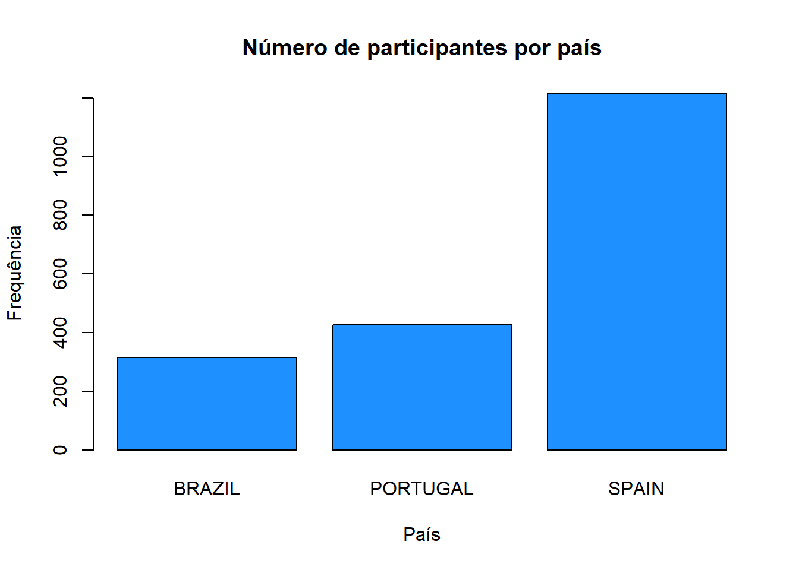
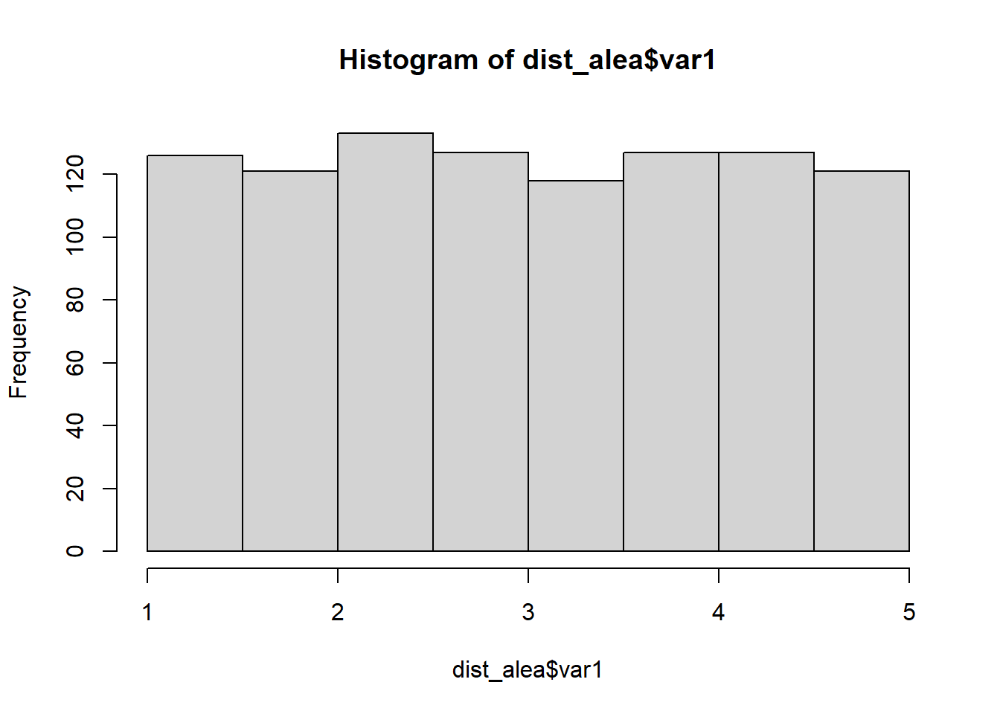
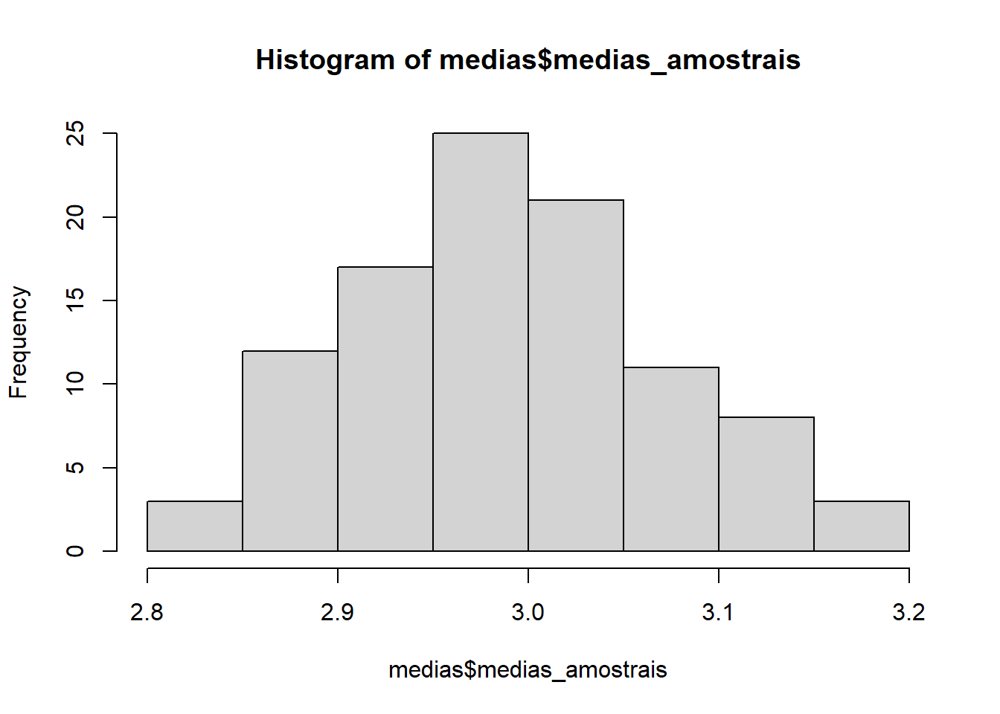
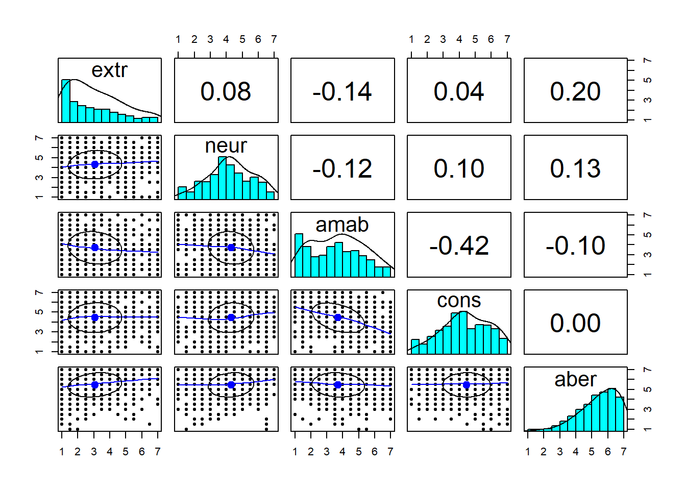
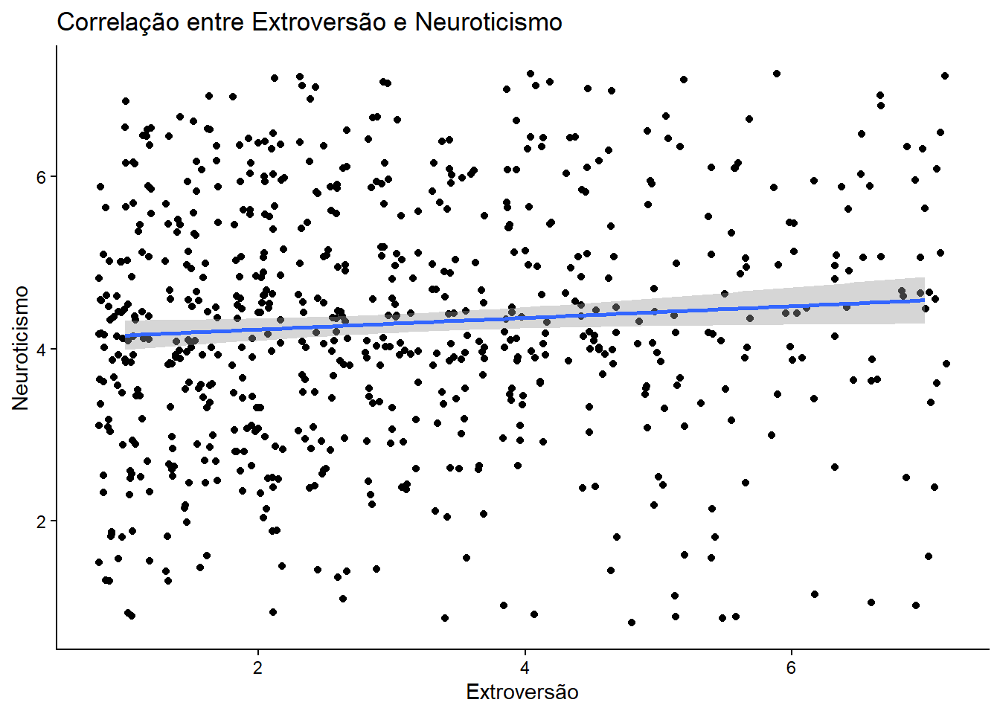
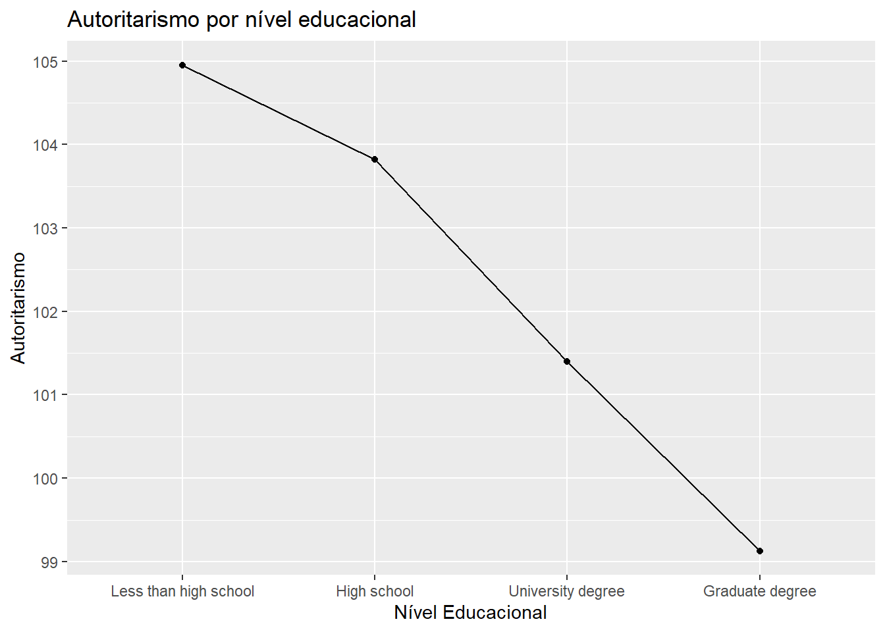
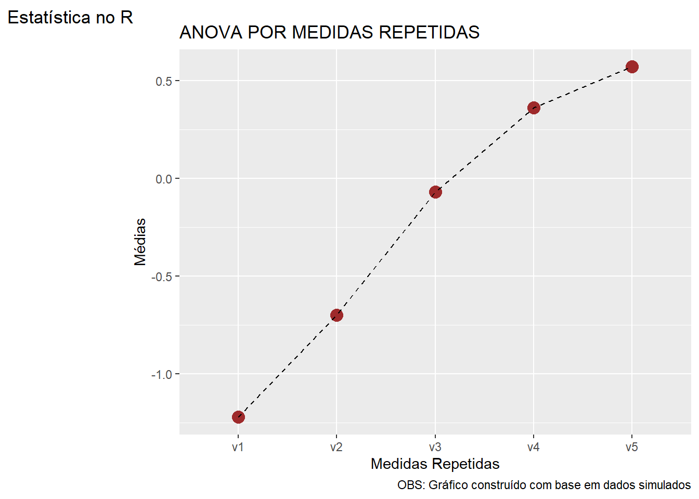

# Comando para atualizar todos os pacotes
# update.packages(ask = FALSE)
pacman::p_load(tidyverse,psych,corrplot,pander,knitr,lavaan,car,DescTools,
kableExtra,readxl)
# options(repos = c(CRAN = "https://cran.rstudio.com/"))Estatística no R - 2026.1
Disciplina: Metodologia em Pesquisa Quantitiva
Esta disciplina tem o objetivo de instrumentalizar o aluno para a realização das análises estatísticas mais empregadas em pesquisas em psicologia, no ambiente de programação R. Inicialmente, vamos carregar e ativar os pacotes que iremos utilizar na disciplina.
Carregamento dos pacotes
A função p_load, do pacote pacman, verifica se um pacote está instalado e em caso negativo tenta instalar o pacote a partir do CRAN ou de qualquer outro repositório na lista de repositórios do pacman.
Importar banco de dados
dataset
# Baixar o banco de dados dataset da internet (github) para o seu computador
## Cria um objeto com o endereço (link) onde está o arquivo
link_dataset <- "https://raw.githubusercontent.com/jmhbueno/R_Stat/04bd66b277606ad8d68047b49eda010e5739d9b2/dataset_mapfre.csv"
## Importa o arquivo do github para o computador (fora do R)
download.file(
url = link_dataset,
destfile = "dataset.csv",
mode = "wb")
dataset <- # nome atribuído ao dataframe
read.csv( # função da base para importar arquivos csv
"dataset.csv", # nome do arquivo csv
encoding="UTF-8", # codificação para ler cedilhas, til, etc...
stringsAsFactors=TRUE) # transformar variáveis string em fator
## OBS: É necessário que o arquivo csv esteja no diretório de trabalho do R.
# Observar o banco de dados
glimpse(dataset)Rows: 1,957
Columns: 94
$ country <fct> SPAIN, SPAIN, SPAIN, SPAIN, SPAIN, SPAIN, SPAIN, SPAIN, …
$ sex <fct> NA, NA, NA, NA, NA, NA, NA, M, M, M, M, M, M, M, M, M, M…
$ age <int> 18, NA, 26, NA, 20, NA, NA, 19, 21, 21, 23, 21, 22, 20, …
$ grado <fct> "Educ.Infantil …
$ curso_ou_ano <int> 1, 2, 4, 3, 1, NA, 3, 1, 3, 3, 4, 4, 4, 2, 4, 3, 3, 1, 1…
$ ceri_1 <int> 1, 1, 1, 2, 1, 2, 1, 1, 1, 2, 3, 2, 1, 1, 2, 1, 2, 2, 1,…
$ ceri_2 <int> 1, 2, 1, 2, 3, 2, 3, 1, 1, 3, 2, 3, 2, 2, 2, 1, 3, 3, 3,…
$ ceri_3 <int> 2, 2, 2, 1, 2, 2, 3, 2, 1, 2, 1, 3, 2, 3, 2, 1, 3, 1, 2,…
$ ceri_4 <int> 1, 1, 1, 2, 1, 1, 2, 1, 1, 3, 3, 3, 1, 2, 3, 1, 2, 1, 2,…
$ ceri_5 <int> NA, 1, 2, 1, NA, 2, 2, 1, 1, 3, 1, 2, 2, 1, 2, 1, 2, 1, …
$ ceri_6 <int> 2, 2, 1, 2, 1, 1, 2, 1, 2, 1, 4, 3, 3, 2, 3, 2, 2, 2, 1,…
$ ceri_7 <int> 1, 1, 1, 1, 1, 2, 2, 1, 1, 2, 2, 1, 1, 2, 1, 1, 2, 1, 1,…
$ ceri_8 <int> 1, 1, 1, 1, 2, 1, 2, 1, 1, 1, 1, 1, 1, 2, 2, 1, 2, 1, 1,…
$ ceri_9 <int> 1, 2, 2, 2, 3, 3, 4, 2, 1, 4, 4, 4, 3, 3, 2, 3, 3, 2, 2,…
$ ceri_10 <int> 1, 1, 1, 1, 2, 2, 1, 1, 1, 4, 2, 3, 2, 1, 2, 1, 2, 1, 1,…
$ cerm_1 <int> 1, 1, 1, 1, 1, 2, 1, 1, 1, 2, 1, 1, 2, 1, 3, 1, 1, 1, 1,…
$ cerm_2 <int> 2, 2, 1, 1, 3, 2, 2, 1, 1, 3, 1, 3, 2, 3, 2, 1, 1, 1, 1,…
$ cerm_3 <int> 1, 1, 1, 1, 1, 2, 4, 1, 1, 2, 2, 2, 1, 1, 2, 1, 1, 1, 2,…
$ cerm_4 <int> 1, 1, 1, 1, 2, 1, 4, 1, 1, 1, 1, 1, 1, 1, 2, 1, 1, 1, 1,…
$ cerm_5 <int> 1, 1, 1, 2, 2, 1, 2, 1, 1, 2, 1, 1, 1, 1, 3, 1, 1, 2, 1,…
$ cerm_6 <int> 2, 1, 1, 2, 1, 1, 2, 1, 2, 2, 3, 3, 2, 2, 1, 2, 1, 2, 1,…
$ cerm_7 <int> 1, 1, 1, 1, 1, 2, 2, 1, 1, 3, 2, 1, 2, 2, 2, 1, 1, 1, 1,…
$ cerm_8 <int> 1, 1, 1, 1, 1, 1, 1, 1, 1, 1, 1, 1, 1, 1, 2, 1, 1, 1, 1,…
$ cerm_9 <int> 3, 3, 2, 2, 4, 3, 3, 2, 3, 4, 4, 4, 3, 3, 2, 2, 3, 4, 2,…
$ cerm_10 <int> 2, 1, 1, 1, 1, 2, 1, 1, 1, 4, 2, 3, 3, 1, 2, 1, 1, 1, 2,…
$ cybvic_1 <int> 1, 1, 1, 2, 1, 1, 2, 2, 2, 2, 1, 1, NA, 1, 1, 1, 1, 1, 1…
$ cybvic_2 <int> 1, 1, 1, 1, 1, 1, 1, 1, 1, 2, 1, 1, 1, 1, 1, 1, 1, 1, 1,…
$ cybvic_3 <int> 1, 1, 2, 2, 1, 2, 1, 3, 1, 2, 1, 2, 1, 1, 1, 1, 1, 1, 1,…
$ cybvic_4 <int> 1, 2, 3, 2, 2, 1, 3, 2, 1, 2, 3, 1, 1, 1, 1, 1, 1, 1, 1,…
$ cybvic_5 <int> 1, 1, 1, 2, 2, 2, 2, 2, 1, 4, 1, 1, 1, 1, 1, 1, 1, 1, 1,…
$ cybvic_6 <int> 1, 1, 1, 2, 1, 3, 1, 1, 1, 3, 1, 1, 1, 1, 1, 1, 1, 1, 1,…
$ cybvic_7 <int> 1, 1, 1, 1, 1, 1, 1, 1, 1, 2, 2, 1, 1, 1, 1, 1, 1, 1, 1,…
$ cybvic_8 <int> 1, 1, 1, 2, 1, 2, 1, 1, 1, 4, 1, 1, 1, 1, 1, 1, 1, 1, 1,…
$ cybvic_9 <int> 1, 1, 1, 1, 1, 1, 1, 1, 1, 2, 1, 2, 1, 1, 2, 1, 1, 1, 1,…
$ cybvic_10 <int> 1, 1, 1, 1, 1, 2, 1, 1, 1, 1, 1, 1, 1, 1, 1, 1, 1, 2, 1,…
$ cybagress_1 <int> 1, 1, 1, 1, 1, 1, 2, 1, 2, 3, 1, 1, NA, 1, 1, 1, 1, 1, 1…
$ cybagress_2 <int> 1, 1, 1, 1, 1, 1, 1, 1, 1, 4, 1, 1, 1, 1, 1, 1, 1, 1, 1,…
$ cybagress_3 <int> 1, 1, 1, 1, 2, 3, 1, 1, 1, 2, 1, 2, 1, 1, 1, 1, 1, 1, 1,…
$ cybagress_4 <int> 1, 1, 1, 2, 1, 1, 2, 1, 1, 3, 1, 1, 1, 1, 1, 1, 1, 1, 1,…
$ cybagress_5 <int> 1, 1, 1, 1, 1, 1, 2, 1, 1, 2, 1, 1, 1, 1, 1, 1, 1, 1, 1,…
$ cybagress_6 <int> 1, 1, 1, 1, 1, 2, 1, 1, 1, 4, 1, 1, 2, 1, 1, 1, 1, 1, 1,…
$ cybagress_7 <int> 1, 1, 1, 1, 1, 1, 1, 1, 1, NA, 1, 1, 1, 1, 1, 1, 1, 1, 1…
$ cybagress_8 <int> 1, 1, 1, 1, 1, 2, 1, 1, 1, 4, 1, 1, 1, 1, 1, 1, 1, 1, 1,…
$ cybagress_9 <int> 1, 1, 1, 1, 1, 1, 1, 1, 1, 2, 1, 1, 1, 1, 1, 1, 1, 1, 1,…
$ cybagress_10 <int> 1, 1, 1, 1, 1, 2, 2, 1, 1, 1, 1, 1, 1, 1, 1, 1, 1, 1, 1,…
$ bai_1 <int> 0, 0, 1, 0, 0, 1, 1, NA, NA, NA, 0, 0, 0, 0, 0, 0, 0, 0,…
$ bai_2 <int> 0, 0, 1, 1, 1, 0, 3, NA, NA, NA, 0, 0, 0, 0, 0, 0, 0, 0,…
$ bai_3 <int> 0, 0, 0, 0, 0, 0, 2, NA, NA, NA, 0, 0, 0, 0, 0, 0, 0, 0,…
$ bai_4 <int> 0, 0, 0, 1, 0, 2, 3, NA, NA, NA, 0, 0, 0, 0, 0, 0, 0, 0,…
$ bai_5 <int> 0, 1, 0, 1, 0, 2, 2, NA, NA, NA, 0, 0, 0, 0, 0, 0, 0, 0,…
$ bai_6 <int> 0, 0, 0, 0, 0, 0, 0, NA, NA, NA, 0, 0, 0, 0, 0, 0, 0, 0,…
$ bai_7 <int> 0, 1, 0, 0, 0, 1, 0, NA, NA, NA, 0, 0, 0, 0, 0, 0, 0, 0,…
$ bai_8 <int> 0, 0, 0, 1, 0, 1, 1, NA, NA, NA, 0, 0, 0, 0, 0, 0, 0, 0,…
$ bai_9 <int> 0, 0, 0, 0, 0, 0, 3, NA, NA, NA, 0, 0, 0, 0, 0, 0, 0, 0,…
$ bai_10 <int> 0, 0, 1, 1, 1, 1, 3, NA, NA, NA, 0, 0, 0, 0, 0, 0, 0, 0,…
$ bai_11 <int> 0, 0, 0, 0, 0, 0, 3, NA, NA, NA, 0, 0, 0, 0, 0, 0, 0, 0,…
$ bai_12 <int> 0, 0, 0, 1, 0, 2, 3, NA, NA, NA, 0, 0, 0, 0, 0, 0, 0, 0,…
$ bai_13 <int> 0, 0, 0, 1, 0, 1, 3, NA, NA, NA, 0, 0, 0, 0, 0, 0, 0, 0,…
$ bai_14 <int> 0, NA, 0, 1, 0, 0, 3, NA, NA, NA, 0, 0, 0, 0, 0, 0, 0, 0…
$ bai_15 <int> 0, 0, 0, 0, 0, 0, 3, NA, NA, NA, 0, 0, 0, 0, 0, 0, 0, 0,…
$ bai_16 <int> 0, 0, 0, 0, 2, 0, 3, NA, NA, NA, 0, 0, 0, 0, 0, 0, 0, 0,…
$ bai_17 <int> 0, 0, 0, 0, 2, 1, 3, NA, NA, NA, 0, 0, 0, 0, 0, 0, 0, 0,…
$ bai_18 <int> 0, 0, 0, 1, 2, 0, 1, NA, NA, NA, 0, 0, 0, 0, 0, 0, 0, 0,…
$ bai_19 <int> 0, 0, 0, 0, 2, 0, 2, NA, NA, NA, 0, 0, 0, 0, 0, 0, 0, 0,…
$ bai_20 <int> 0, 0, 0, 0, 2, 1, 1, NA, NA, NA, 0, 0, 0, 0, 0, 0, 0, 0,…
$ bai_21 <int> 0, 0, 0, 0, 1, 1, 1, NA, NA, NA, 0, 0, 0, 0, 0, 0, 0, 0,…
$ bdi_1 <int> 0, 0, 0, 0, 0, 0, 0, 1, NA, NA, 0, 0, 0, 0, 0, 0, 0, 0, …
$ bdi_2 <int> 0, 0, 1, 0, 1, 0, 1, 1, NA, NA, 1, 1, 0, 0, 0, 0, 1, 0, …
$ bdi_3 <int> 0, 0, 1, 0, 0, 0, 0, 1, NA, NA, 1, 0, 0, 0, 0, 0, 1, 0, …
$ bdi_4 <int> 0, 0, 1, 0, 0, 0, 0, NA, NA, NA, 0, 0, 0, 0, 0, 0, 0, 0,…
$ bdi_5 <int> 0, 0, 1, 0, 0, 0, 0, 0, NA, NA, 0, 0, 0, 1, 0, 0, 0, 0, …
$ bdi_6 <int> 0, 0, 0, 0, 0, 0, 0, NA, NA, NA, 0, 0, 0, 0, 0, 0, 0, 0,…
$ bdi_7 <int> 0, 0, 2, 0, 0, 0, 0, NA, NA, NA, 0, 0, 0, 0, 0, 0, 0, 0,…
$ bdi_8 <int> 0, 0, 3, 1, 1, 0, 1, 2, NA, NA, 1, 1, 0, 1, 1, 0, 0, 0, …
$ bdi_9 <int> 0, 0, 0, 0, 0, 0, 0, 0, NA, NA, 0, 0, 0, 0, 0, 0, 0, 0, …
$ bdi_10 <int> 0, 0, 0, 0, 0, 0, 0, 0, NA, NA, 0, 0, 0, 0, 1, 0, 0, 0, …
$ bdi_11 <int> 0, 0, 0, 0, 1, 0, 0, 0, NA, NA, 0, 0, 0, 0, 0, 0, 0, 0, …
$ bdi_12 <int> 0, 0, 1, 1, 0, 1, 0, 3, NA, NA, 0, 0, 0, 0, 0, 0, 0, 0, …
$ bdi_13 <int> 0, 0, 0, 0, 0, 0, 0, 0, NA, NA, 0, 0, 0, 0, 0, 0, 0, 0, …
$ bdi_14 <int> 0, 0, 0, NA, 0, 0, 0, 1, NA, NA, 0, 0, 0, 0, 0, 0, 0, 0,…
$ bdi_15 <int> 0, 0, 1, 1, 1, 0, 0, 0, NA, NA, 0, 0, 0, 0, 0, 1, 0, 0, …
$ bdi_16 <int> 0, 0, 1, 0, 1, 0, 0, 0, NA, NA, 1, 0, 0, 0, 1, 1, 0, 1, …
$ bdi_17 <int> 0, 0, 0, 0, 0, 0, 0, 0, NA, NA, 0, 0, 0, 0, 0, 0, 0, 0, …
$ bdi_18 <int> 0, 0, 1, 0, 1, 0, 0, 0, NA, NA, 1, 0, 0, 0, 0, 1, 0, 0, …
$ bdi_19 <int> 1, 2, 1, 0, 2, 0, 1, 0, NA, NA, 0, 1, 0, 0, 1, 1, 0, 0, …
$ bdi_20 <int> 0, 0, 1, 0, 1, 1, 0, 0, NA, NA, 0, 0, 0, 0, 0, 0, 0, 0, …
$ bdi_21 <int> 0, 0, 1, 0, 0, 0, 0, 0, NA, NA, 0, 0, 0, 0, 0, 0, 0, 0, …
$ id <int> 1, 2, 3, 4, 5, 6, 7, 8, 9, 10, 11, 12, 13, 14, 15, 16, 1…
$ bdi_sum <int> 1, 2, 16, 3, 9, 2, 3, 9, NA, NA, 5, 3, 0, 2, 4, 4, 2, 1,…
$ number_na_bdi <int> 0, 0, 0, 1, 0, 0, 0, 3, 21, 21, 0, 0, 0, 0, 0, 0, 0, 0, …
$ bdi_class <fct> minima, minima, leve, minima, minima, minima, minima, mi…
$ bai_sum <int> 0, 2, 3, 9, 13, 14, 44, NA, NA, NA, 0, 0, 0, 0, 0, 0, 0,…
$ number_na_bai <int> 0, 1, 0, 0, 0, 0, 0, 21, 21, 21, 0, 0, 0, 0, 0, 0, 0, 0,…
$ bai_class <fct> minima, minima, minima, minima, leve, leve, grave, NA, N…Esse banco de dados se refere ao artigo “Sintomas de depressão e ansiedade em uma amostra representativa de universitários espanhóis, portugueses e brasileiros”. Sugere-se a leitura desse artigo para a compreensão dos dados.
big_five
# criar um objeto com a url onde do arquivo
link_bf <-
"https://raw.githubusercontent.com/jmhbueno/2026_Intro_R/main/big_five.xlsx"
# Importar o arquivo do githug para o computador (fora do R)
download.file(
url = link_bf,
destfile = "big_five.xlsx",
mode = "wb")
# importar planilha para dentro do R
big_five <- read_xlsx("big_five.xlsx")
# visualizar o arquivo importado
str(big_five)tibble [19,719 × 57] (S3: tbl_df/tbl/data.frame)
$ race : num [1:19719] 3 13 1 3 11 13 5 4 5 3 ...
$ age : num [1:19719] 53 46 14 19 25 31 20 23 39 18 ...
$ engnat : num [1:19719] 1 1 2 2 2 1 1 2 1 1 ...
$ gender : num [1:19719] 1 2 2 2 2 2 2 1 2 2 ...
$ hand : num [1:19719] 1 1 1 1 1 1 1 1 3 1 ...
$ source : num [1:19719] 1 1 1 1 2 2 5 2 4 5 ...
$ country: chr [1:19719] "US" "US" "PK" "RO" ...
$ E1 : num [1:19719] 4 2 5 2 3 1 5 4 3 1 ...
$ E2 : num [1:19719] 2 2 1 5 1 5 1 3 1 4 ...
$ E3 : num [1:19719] 5 3 1 2 3 2 5 5 5 2 ...
$ E4 : num [1:19719] 2 3 4 4 3 4 1 3 1 5 ...
$ E5 : num [1:19719] 5 3 5 3 3 1 5 5 5 2 ...
$ E6 : num [1:19719] 1 3 1 4 1 3 1 1 1 4 ...
$ E7 : num [1:19719] 4 1 1 3 3 2 5 4 5 1 ...
$ E8 : num [1:19719] 3 5 5 4 1 4 4 3 2 4 ...
$ E9 : num [1:19719] 5 1 5 4 3 1 4 4 5 1 ...
$ E10 : num [1:19719] 1 5 1 5 5 5 1 3 3 5 ...
$ N1 : num [1:19719] 1 2 5 5 3 1 2 1 2 5 ...
$ N2 : num [1:19719] 5 3 1 4 3 5 4 4 4 2 ...
$ N3 : num [1:19719] 2 4 5 4 3 4 2 4 5 5 ...
$ N4 : num [1:19719] 5 2 5 2 4 5 4 4 3 2 ...
$ N5 : num [1:19719] 1 3 5 4 3 1 2 1 3 3 ...
$ N6 : num [1:19719] 1 4 5 5 3 4 2 1 5 4 ...
$ N7 : num [1:19719] 1 3 5 5 3 4 3 1 5 3 ...
$ N8 : num [1:19719] 1 2 5 5 3 1 2 1 4 2 ...
$ N9 : num [1:19719] 1 2 5 4 3 5 2 1 3 3 ...
$ N10 : num [1:19719] 1 4 5 5 4 2 2 1 3 4 ...
$ A1 : num [1:19719] 1 1 5 2 5 2 5 2 1 2 ...
$ A2 : num [1:19719] 5 3 1 5 5 2 5 5 5 3 ...
$ A3 : num [1:19719] 1 3 5 4 3 3 1 1 1 1 ...
$ A4 : num [1:19719] 5 4 5 4 5 4 5 4 5 4 ...
$ A5 : num [1:19719] 2 4 1 3 1 3 1 3 1 2 ...
$ A6 : num [1:19719] 3 4 5 5 5 4 5 3 5 4 ...
$ A7 : num [1:19719] 1 2 1 3 1 3 1 1 1 3 ...
$ A8 : num [1:19719] 5 3 5 4 5 5 5 3 5 3 ...
$ A9 : num [1:19719] 4 4 5 4 5 5 4 4 5 3 ...
$ A10 : num [1:19719] 5 3 5 3 5 3 5 5 4 2 ...
$ C1 : num [1:19719] 4 4 4 3 3 2 2 4 4 5 ...
$ C2 : num [1:19719] 1 1 1 3 1 5 4 2 3 2 ...
$ C3 : num [1:19719] 5 3 5 4 5 4 3 5 5 4 ...
$ C4 : num [1:19719] 1 2 1 5 3 3 3 1 2 2 ...
$ C5 : num [1:19719] 5 3 5 1 3 3 3 4 5 3 ...
$ C6 : num [1:19719] 1 1 1 4 1 4 3 1 2 2 ...
$ C7 : num [1:19719] 4 5 5 5 1 5 3 4 5 4 ...
$ C8 : num [1:19719] 1 1 1 4 3 3 3 1 2 2 ...
$ C9 : num [1:19719] 4 4 5 2 3 5 3 3 4 4 ...
$ C10 : num [1:19719] 5 4 5 3 3 3 3 5 3 4 ...
$ O1 : num [1:19719] 4 3 4 4 3 4 3 3 3 4 ...
$ O2 : num [1:19719] 1 3 5 3 1 2 1 1 3 2 ...
$ O3 : num [1:19719] 3 3 5 5 1 1 5 5 5 5 ...
$ O4 : num [1:19719] 1 3 1 2 1 3 1 1 3 2 ...
$ O5 : num [1:19719] 5 2 5 4 3 3 4 4 5 4 ...
$ O6 : num [1:19719] 1 3 1 2 1 5 1 1 1 1 ...
$ O7 : num [1:19719] 4 3 5 5 3 5 4 5 5 4 ...
$ O8 : num [1:19719] 2 1 5 2 1 4 3 3 3 3 ...
$ O9 : num [1:19719] 5 3 5 5 5 5 3 2 4 4 ...
$ O10 : num [1:19719] 5 2 5 5 3 3 4 5 5 4 ...#Calcular as pontuações nos fatores
names(big_five) %>% as.data.frame() .
1 race
2 age
3 engnat
4 gender
5 hand
6 source
7 country
8 E1
9 E2
10 E3
11 E4
12 E5
13 E6
14 E7
15 E8
16 E9
17 E10
18 N1
19 N2
20 N3
21 N4
22 N5
23 N6
24 N7
25 N8
26 N9
27 N10
28 A1
29 A2
30 A3
31 A4
32 A5
33 A6
34 A7
35 A8
36 A9
37 A10
38 C1
39 C2
40 C3
41 C4
42 C5
43 C6
44 C7
45 C8
46 C9
47 C10
48 O1
49 O2
50 O3
51 O4
52 O5
53 O6
54 O7
55 O8
56 O9
57 O10big_five$extr <- big_five %>% select( 8:17) %>% rowMeans()
big_five$neur <- big_five %>% select(18:27) %>% rowMeans()
big_five$amab <- big_five %>% select(28:37) %>% rowMeans()
big_five$cons <- big_five %>% select(38:47) %>% rowMeans()
big_five$aber <- big_five %>% select(48:57) %>% rowMeans()Estatísticas
Este curso está didaticamente dividido em três tipos de análises estatísticas: 1. Estatísticas descritivas, que incluem as medidas de frequência, de tendência central e de dispersão. 2. Estatísticas que ajudam a compreender associação entre variáveis: qui-quadrado, correlação, regressão e análise fatorial. 3. Efeitos de grupo em outras variáveis: t-teste e análises de variância.
As próximas seções apresentam recursos para a realização dessas análises.
Estatísticas descritivas de frequência
A forma mais simples de descrever algo quantitativamente é contando o número de ocorrências. Por exemplo, podemos descrever uma amostra quanto à escolaridade, contando as ocorrências de ensino fundamental, ensino médio e ensino superior. As formas mais comuns para sumariar esses dados de forma mais amigável para o leitor é através de tabelas e gráficos. Vamos ver essas formas a seguir.
Tabelas de frequência com a função table()
# Tabulando dados
table(dataset$country)
BRAZIL PORTUGAL SPAIN
315 426 1216 table(dataset$country, dataset$sex)
F M
BRAZIL 166 149
PORTUGAL 223 203
SPAIN 825 384table(dataset$country, dataset$sex) %>% kable()| F | M | |
|---|---|---|
| BRAZIL | 166 | 149 |
| PORTUGAL | 223 | 203 |
| SPAIN | 825 | 384 |
# Tabulação em dataframe com porcentagens
table(dataset$country) %>%
as.data.frame() %>%
mutate("%" = Freq*100/sum(Freq)) %>%
kable()| Var1 | Freq | % |
|---|---|---|
| BRAZIL | 315 | 16.09607 |
| PORTUGAL | 426 | 21.76801 |
| SPAIN | 1216 | 62.13592 |
table(dataset$country, dataset$sex) %>%
as.data.frame() %>%
mutate("%" = Freq*100/sum(Freq)) %>%
kable()| Var1 | Var2 | Freq | % |
|---|---|---|---|
| BRAZIL | F | 166 | 8.512821 |
| PORTUGAL | F | 223 | 11.435897 |
| SPAIN | F | 825 | 42.307692 |
| BRAZIL | M | 149 | 7.641026 |
| PORTUGAL | M | 203 | 10.410256 |
| SPAIN | M | 384 | 19.692308 |
table(dataset$country, dataset$sex, dataset$bai_class) %>%
as.data.frame() %>%
mutate("%" = Freq*100/sum(Freq)) %>%
kable()| Var1 | Var2 | Var3 | Freq | % |
|---|---|---|---|---|
| BRAZIL | F | grave | 5 | 0.2570694 |
| PORTUGAL | F | grave | 8 | 0.4113111 |
| SPAIN | F | grave | 25 | 1.2853470 |
| BRAZIL | M | grave | 4 | 0.2056555 |
| PORTUGAL | M | grave | 5 | 0.2570694 |
| SPAIN | M | grave | 6 | 0.3084833 |
| BRAZIL | F | leve | 40 | 2.0565553 |
| PORTUGAL | F | leve | 55 | 2.8277635 |
| SPAIN | F | leve | 178 | 9.1516710 |
| BRAZIL | M | leve | 28 | 1.4395887 |
| PORTUGAL | M | leve | 23 | 1.1825193 |
| SPAIN | M | leve | 50 | 2.5706941 |
| BRAZIL | F | minima | 105 | 5.3984576 |
| PORTUGAL | F | minima | 141 | 7.2493573 |
| SPAIN | F | minima | 551 | 28.3290488 |
| BRAZIL | M | minima | 107 | 5.5012853 |
| PORTUGAL | M | minima | 167 | 8.5861183 |
| SPAIN | M | minima | 309 | 15.8868895 |
| BRAZIL | F | moderada | 16 | 0.8226221 |
| PORTUGAL | F | moderada | 19 | 0.9768638 |
| SPAIN | F | moderada | 71 | 3.6503856 |
| BRAZIL | M | moderada | 10 | 0.5141388 |
| PORTUGAL | M | moderada | 6 | 0.3084833 |
| SPAIN | M | moderada | 16 | 0.8226221 |
Tabelas de frequência com a função count()
# Contar uma variável
dataset %>% # chama o dataframe
count(sex) %>% # conta as frequências
mutate("%" = n*100/sum(n)) %>% # calcula as porcentagens e coloca na coluna "%"
kable() # | sex | n | % |
|---|---|---|
| F | 1214 | 62.0337251 |
| M | 736 | 37.6085846 |
| NA | 7 | 0.3576903 |
# Contar uma variável x em função de uma y, com totalização integral.
dataset %>%
count(sex,country) %>%
mutate("%" = n*100/sum(n)) %>%
kable()| sex | country | n | % |
|---|---|---|---|
| F | BRAZIL | 166 | 8.4823710 |
| F | PORTUGAL | 223 | 11.3949923 |
| F | SPAIN | 825 | 42.1563618 |
| M | BRAZIL | 149 | 7.6136944 |
| M | PORTUGAL | 203 | 10.3730199 |
| M | SPAIN | 384 | 19.6218702 |
| NA | SPAIN | 7 | 0.3576903 |
# dataset %>%
# count(sex, country) %>%
# mutate("%" = n*100/sum(n)) %>%
# kable(format = "html", digits = 2) %>%
# kableExtra::kable_styling(full_width = TRUE)
# Contar uma variável x em função de outra y, com totalização pelas categorias de x.
dataset %>%
filter(!is.na(sex)) %>%
group_by(sex) %>%
count(country) %>%
mutate(porc = n/sum(n)*100) %>%
kable(format = "html", digits = 2) %>%
kable_styling(full_width = TRUE)| sex | country | n | porc |
|---|---|---|---|
| F | BRAZIL | 166 | 13.67 |
| F | PORTUGAL | 223 | 18.37 |
| F | SPAIN | 825 | 67.96 |
| M | BRAZIL | 149 | 20.24 |
| M | PORTUGAL | 203 | 27.58 |
| M | SPAIN | 384 | 52.17 |
Dica: explore as possibilidades de criar tabelas de resultados descritivos com a função tabyl do pacote janitor.
Gráficos de frequência
Muitas vezes, deseja-se alterar cores de um gráfico, seja de suas linhas, pontos, barras, fatias de pizza, etc. As cores podem ser inseridas pelo seu nome ou pelo seu código. Clique aqui para baixar um arquivo com os nomes das cores do R… e aqui para acessar um site gerador de paletas de cores, por código. Os códigos devem ser inseridos após uma hashtag (#).
Gráficos de barras
# Contar as frequências por país
tab_bar <- table(dataset$country)
# Gráfico de barras
barplot(tab_bar,
col = "dodgerblue", # cor do preenchimento
border = "black", # cor da borda
main = "Número de participantes por país",
xlab = "País",
ylab = "Frequência")
bp <- barplot(tab_bar,
col = "dodgerblue",
border = "black",
main = "Número de participantes por país",
xlab = "País",
ylab = "Frequência",
ylim = c(0, max(tab_bar) * 1.15)) # espaço para o texto acima das barras
# Adicionar os valores acima das barras
text(x = bp,
y = tab_bar,
labels = tab_bar,
pos = 3, # acima do ponto
cex = 0.9, # tamanho da letra
font = 2) # negrito
Gráficos de pizza
tab_country <- table(dataset$country)
# Calcular as porcentagens
pct_country <- round(prop.table(tab_country) * 100, 1)
# Criar os labels com nome + porcentagem
labels_country <- paste0(names(tab_country), "\n", pct_country, "%")
pie(tab_country,
labels = labels_country,
col = c("#fff3b0", "#e09f3e", "#9e2a2b"),
main = "Proporção de participantes em cada país",
cex = 0.8)
Estatísticas descritivas de tendência central e de dispersão
A descrição dos dados geralmente é realizada pelas seguintes estatísticas: Média, desvio padrão, mediana, amplitude, mínimo, máximo, assimetria e curtose. Algumas dessas análises (média, desvio padrão e mediana) informam sobre o ponto central da distribuição das medidas. Outras, como o desvio padrão, a amplitude, a assimetria e a curtose informam sobre a forma como os valores se afastam do ponto central.
Aqui, é importante atentar para a distribuição normal, cujas características são apresentadas na Figura abaixo.
Medidas de tendência central
## mean()
mean(dataset$age, na.rm = TRUE)[1] 21.46034## median()
median(dataset$age, na.rm = TRUE)[1] 21Medidas de dispersão
## min()
min(dataset$age, na.rm = TRUE)[1] 17## max()
max(dataset$age, na.rm = TRUE)[1] 68## range()
range(dataset$age, na.rm = TRUE)[1] 17 68## skewness()
# moments::skewness(dataset$age, na.rm = TRUE) # pacote moments
skew(dataset$age, na.rm = TRUE) # pacote psych[1] 5.014931## kurtosis()
# moments::kurtosis(dataset$age, na.rm = TRUE) # pacote moments
kurtosi(dataset$age, na.rm = TRUE) # pacote psych[1] 41.31324## sd()
sd(dataset$age, na.rm = TRUE)[1] 3.828075Funções que sumariam dados
# summary() {base}
dataset %>% select(age) %>% summary() age
Min. :17.00
1st Qu.:19.00
Median :21.00
Mean :21.46
3rd Qu.:22.00
Max. :68.00
NA's :28 # summarise() {tidyverse}
dataset %>%
drop_na(sex,age,bai_sum,bdi_sum) %>%
group_by(sex) %>%
summarise(idade = mean(age),
BAI = mean(bai_sum),
BDI = mean(bdi_sum)) %>% kable()| sex | idade | BAI | BDI |
|---|---|---|---|
| F | 21.55112 | 9.520366 | 9.606816 |
| M | 21.30490 | 6.707692 | 8.618182 |
# describe() {psych}
describe(dataset$age, na.rm = TRUE) %>% kable()| vars | n | mean | sd | median | trimmed | mad | min | max | range | skew | kurtosis | se | |
|---|---|---|---|---|---|---|---|---|---|---|---|---|---|
| X1 | 1 | 1929 | 21.46034 | 3.828075 | 21 | 20.93528 | 2.9652 | 17 | 68 | 51 | 5.014931 | 41.31324 | 0.0871594 |
describe(dataset$age, na.rm = TRUE) %>% select(n,mean,sd) %>% kable()| n | mean | sd | |
|---|---|---|---|
| X1 | 1929 | 21.46034 | 3.828075 |
dataset %>% select(age,bai_sum,bdi_sum) %>% describe(na.rm = TRUE) %>% kable()| vars | n | mean | sd | median | trimmed | mad | min | max | range | skew | kurtosis | se | |
|---|---|---|---|---|---|---|---|---|---|---|---|---|---|
| age | 1 | 1929 | 21.460342 | 3.828075 | 21 | 20.935275 | 2.9652 | 17 | 68 | 51 | 5.014931 | 41.313241 | 0.0871594 |
| bai_sum | 2 | 1952 | 8.484631 | 8.113986 | 6 | 7.190141 | 5.9304 | 0 | 48 | 48 | 1.705854 | 3.476144 | 0.1836514 |
| bdi_sum | 3 | 1949 | 9.229348 | 7.735969 | 8 | 8.182575 | 5.9304 | 0 | 57 | 57 | 1.624164 | 4.112384 | 0.1752301 |
# describeBy
describeBy(bai_sum ~ country,
data = dataset)
Descriptive statistics by group
country: BRAZIL
vars n mean sd median trimmed mad min max range skew kurtosis se
bai_sum 1 315 9.01 8.4 6 7.75 5.93 0 46 46 1.64 3.31 0.47
------------------------------------------------------------
country: PORTUGAL
vars n mean sd median trimmed mad min max range skew kurtosis se
bai_sum 1 424 7.92 8.04 5 6.56 5.93 0 45 45 1.82 3.87 0.39
------------------------------------------------------------
country: SPAIN
vars n mean sd median trimmed mad min max range skew kurtosis
bai_sum 1 1213 8.55 8.06 6 7.27 5.93 0 48 48 1.68 3.38
se
bai_sum 0.23## Com mais de uma variável dependente
describeBy(bai_sum + bdi_sum ~ country, data = dataset)
Descriptive statistics by group
country: BRAZIL
vars n mean sd median trimmed mad min max range skew kurtosis
bai_sum 1 315 9.01 8.40 6.0 7.75 5.93 0 46 46 1.64 3.31
bdi_sum 2 314 10.89 8.29 9.5 9.97 8.15 0 41 41 1.01 0.80
se
bai_sum 0.47
bdi_sum 0.47
------------------------------------------------------------
country: PORTUGAL
vars n mean sd median trimmed mad min max range skew kurtosis se
bai_sum 1 424 7.92 8.04 5 6.56 5.93 0 45 45 1.82 3.87 0.39
bdi_sum 2 423 9.05 7.73 7 8.00 5.93 0 53 53 1.76 5.11 0.38
------------------------------------------------------------
country: SPAIN
vars n mean sd median trimmed mad min max range skew kurtosis
bai_sum 1 1213 8.55 8.06 6 7.27 5.93 0 48 48 1.68 3.38
bdi_sum 2 1212 8.86 7.54 7 7.83 5.93 0 57 57 1.77 5.12
se
bai_sum 0.23
bdi_sum 0.22Dica: vejam também a função tableby, do pacote arsenal, para produzir tabelas descritivas.
Gráficos de linhas
# Extrair as médias de cada país
medias_bai <- c(9.01, 7.92, 8.55) # BRAZIL, PORTUGAL, SPAIN
medias_bdi <- c(10.89, 9.05, 8.86)
paises <- c("Brazil", "Portugal", "Spain")
# Gráfico base com a linha do BAI
plot(1:3, # posições no eixo x
medias_bai,
type = "o", # linha + pontos
col = "red",
lwd = 2, # espessura da linha
pch = 16, # tipo de ponto (círculo preenchido)
cex = 1.5, # tamanho do ponto
ylim = c(0, 12), # Escala do eixo y
xlab = "País",
ylab = "Média",
main = "Médias de Ansiedade e Depressão por País",
xaxt = "n") # suprime o eixo x automático
# Adicionar os nomes dos países no eixo x
axis(1, at = 1:3, labels = paises)
# Adicionar a linha do BDI
lines(1:3,
medias_bdi,
type = "o",
col = "blue",
lwd = 2,
pch = 16,
cex = 1.5) # tamanho do ponto
# Adicionar legenda
legend("bottomright", # Posição da legenda ("topright")
legend = c("Ansiedade (BAI)",
"Depressão (BDI)"),
col = c("red", "blue"),
lwd = 1, # espessura da linha
pch = 16, # tipo de ponto
bty = "n") # sem borda na legenda
Boxplot
# Organizar os dados em uma lista
dados_box <- list(
"Ansiedade (BAI)" = dataset$bai_sum,
"Depressão (BDI)" = dataset$bdi_sum)
# Boxplot
boxplot(dados_box,
col = c("red", "blue"), # cor de preenchimento
border = "black", # cor da borda
main = "Distribuição de Ansiedade e Depressão",
ylab = "Pontuação", # Rótulo do eixo y
xlab = "", # Rótulo do eixo x (vazio)
notch = FALSE, # TRUE adiciona um entalhe na mediana
outline = TRUE, # FALSE oculta os outliers
lwd = 1.5) # espessura das bordas
# Adicionar linha da mediana com valor
mediana_bai <- median(dataset$bai_sum, na.rm = TRUE)
mediana_bdi <- median(dataset$bdi_sum, na.rm = TRUE)
text(x = c(1, 2),
y = c(mediana_bai, mediana_bdi),
labels = c(mediana_bai, mediana_bdi),
pos = 3, # posição acima do ponto
cex = 0.9,
font = 2) # negrito
Dica: procurem saber como fazer gráficos utilizando o ggplot2, um pacote da família tidyverse. Aqui tem uma playlist (vídeos) interessante e bem didática sobre esse assunto.
Teorema do Limite Central


[1] 2.989111[1] 1.149936 mean(var1)
1 2.989938
[1] 2.987672[1] 0.0796302Análises de associação entre variáveis
Muitas vezes, o pesquisador está interessado no estudo ou análise de relações entre variáveis. Nesses casos, ele recorrerá a estatísticas como o teste de qui-quadrado (caso tenha variáveis do tipo nominal ou categórica), coeficiente de correlação de Pearson ou regressão linear, entre outras, quando as variáveis forem contínuas.
Testes de Qui-Quadrado
O teste de qui-quadrado é uma medida de associação entre variáveis categóricas, das quais só temos a frequência de ocorrência. Existem três tipos de testes de qui-quadrado:
de aderência: quando se deseja verificar as distribuições de probabilidades de cada categoria de uma variável em relação a um valor teórico esperado.
de homogeneidade: quando se deseja verificar se as distribuições das categorias são as mesmas para diferentes subpopulações de interesse.
de independência: verficiar se duas variáveis categóricas são independentes
Neste caso, vamos fazer uma análise de qui-quadrado de independência, a mais comumumente utilizada, para verificar se há uma associação entre país e sexo dos participantes do banco de dados dataset. O primeiro passo para isso é montar uma tabela de contingência.
Tabela de Contingência
Nesse caso, vamos usar a função da base table() para gerar uma tabela 2 x 3, duas linhas e três colunas, em que as linhas representarão os sexos masculino e feminino, e as colunas representarão os países: Brasil, Portugal e Espanha.
tabcont_sex_country <- table(dataset$sex, # linhas
dataset$country) # colunasO próximo passo é realizar a análise de qui-quadrado em si.
Análise de qui-quadrado.
# É bom salvá-la em um objeto porque tem mais informações do que as que são mostradas na análise.
# options(scipen = 999) # função para tirar a notação científica de potência.
# Qui-quadrado
chi_sex_country <- chisq.test(tabcont_sex_country)
chi_sex_country
Pearson's Chi-squared test
data: tabcont_sex_country
X-squared = 48.458, df = 2, p-value = 3.003e-11# chi_sex_country$expected %>% round(digits = 0)
# chi_sex_country$observed
# options(scipen = 0)Nesse caso, o X2 foi de 48,458, para 2 graus de liberdade, e o valor de p foi igual a 3.003e-11 (lê-se 3.003 x 10-11). Ou seja, o qui-quadrado foi estatisticamente significativo, indicando que os participantes dos sexos masculino e feminino não foram distribuídos homogeneamente dentro dos países. Isso poderia ser relatado da seguinte forma:
Relato: Foi realizado um teste qui-quadrado de independência para verificar se a distribuição dos sexos masculino e feminino foi homogênea entre os participantes dos três países (Brasil, Portugal e Espanha). Os resultados indicaram associação estatisticamente significativa entre sexo e país (χ²(2) = 48,46; p < 0,001), sugerindo que a distribuição dos sexos não foi homogênea entre os países. A inspeção da tabela de contingência revelou que essa heterogeneidade se deve principalmente à amostra espanhola, que apresentou proporção de mulheres consideravelmente superior à de homens, enquanto Brasil e Portugal apresentaram distribuições mais equilibradas entre os sexos.
Representação em tabela
dataset %>%
drop_na(sex) %>%
group_by(sex) %>%
count(country) %>%
mutate("%" = n*100/sum(n)) %>%
kable()| sex | country | n | % |
|---|---|---|---|
| F | BRAZIL | 166 | 13.67381 |
| F | PORTUGAL | 223 | 18.36903 |
| F | SPAIN | 825 | 67.95717 |
| M | BRAZIL | 149 | 20.24457 |
| M | PORTUGAL | 203 | 27.58152 |
| M | SPAIN | 384 | 52.17391 |
Pode-se observar que as distribuições de Brasil e Portugal são muito próximas, mas a da Espanha é bastante diferente, o que deve estar produzindo a significância estatística da distribuição.
Representação gráfica
# Tabela de contingência (já existe no seu script)
tabcont_sex_country <- table(dataset$sex, dataset$country)
# Gráfico de barras agrupadas
barplot(tabcont_sex_country,
beside = TRUE, # TRUE = barras lado a lado; FALSE = empilhadas
col = c("#656d4a", "#936639"),
border = "black",
main = "Distribuição de Sexo por País",
xlab = "País",
ylab = "Frequência",
legend.text = c("Feminino", "Masculino"),
args.legend = list(
x = "topleft",
bty = "n", # sem borda na legenda
title = "Sexo"))
Coeficientes de correlação: Pearson, Spearman e Kendall
Quando o interesse do pesquisador é investigar o grau de associação entre variáveis, ele pode empregar o Coeficiente de Correlação de Pearson. Os resultados dessa análise podem variar de -1 a 1. Resultados positivos revelam associação diretamente proporcional entre as variáveis, resultados negativos revelam associação inversamente proporcional entre as variáveis e resultados próximos de zero indicam que não há associação entre as variáveis.
Quando os dados apresentam distribuição normal, usamos o coeficiente de correlação de Pearson. Para dados que não apresentam essa distribuição, usamos a correlação de Kendal ou Spearman. Para isso, vamos usar a função corrplot() do pacote corrplot. Portanto, é necessário instalar ( install.packages("corrplot")) e ativar library(corrplot) esse pacote.
Matriz de correlações
# matriz completa (correlações entre todas as variáveis)
matriz_comp <- corr.test(dataset[,c(3,89,92)])
matriz_comp <- corr.test(dataset[,c('age',"bai_sum","bdi_sum")])
## Visualização dos resultados
matriz_compCall:corr.test(x = dataset[, c("age", "bai_sum", "bdi_sum")])
Correlation matrix
age bai_sum bdi_sum
age 1.00 -0.04 -0.02
bai_sum -0.04 1.00 0.60
bdi_sum -0.02 0.60 1.00
Sample Size
age bai_sum bdi_sum
age 1929 1924 1922
bai_sum 1924 1952 1948
bdi_sum 1922 1948 1949
Probability values (Entries above the diagonal are adjusted for multiple tests.)
age bai_sum bdi_sum
age 0.00 0.11 0.43
bai_sum 0.06 0.00 0.00
bdi_sum 0.43 0.00 0.00
To see confidence intervals of the correlations, print with the short=FALSE option## Visualização somente das correlações
matriz_comp$r age bai_sum bdi_sum
age 1.00000000 -0.04334112 -0.01805132
bai_sum -0.04334112 1.00000000 0.59994091
bdi_sum -0.01805132 0.59994091 1.00000000round(matriz_comp$r,digits = 2) age bai_sum bdi_sum
age 1.00 -0.04 -0.02
bai_sum -0.04 1.00 0.60
bdi_sum -0.02 0.60 1.00matriz_comp$n age bai_sum bdi_sum
age 1929 1924 1922
bai_sum 1924 1952 1948
bdi_sum 1922 1948 1949matriz_comp$p age bai_sum bdi_sum
age 0.0000000 1.146702e-01 4.289845e-01
bai_sum 0.0573351 0.000000e+00 2.605288e-190
bdi_sum 0.4289845 8.684295e-191 0.000000e+00# matriz de correlações de ansiedade/depressão com idade
matriz_cruz <- corr.test(dataset[,c(89,92)], dataset[,3], method = "pearson")
## Visualização dos resultados
matriz_cruzCall:corr.test(x = dataset[, c(89, 92)], y = dataset[, 3], method = "pearson")
Correlation matrix
[,1]
bdi_sum -0.02
bai_sum -0.04
Sample Size
[,1]
bdi_sum 1922
bai_sum 1924
These are the unadjusted probability values.
The probability values adjusted for multiple tests are in the p.adj object.
[,1]
bdi_sum 0.43
bai_sum 0.06
To see confidence intervals of the correlations, print with the short=FALSE option## Visualização somente das correlações
matriz_cruz$r [,1]
bdi_sum -0.01805132
bai_sum -0.04334112matriz_cruz$stars %>% kable()| bdi_sum | -0.02 |
| bai_sum | -0.04 |
round(matriz_cruz$r, digits = 2) %>% kable()| bdi_sum | -0.02 |
| bai_sum | -0.04 |
Os resultados são apresentados em três matrizes. A primeira com os coeficientes de correlação, a segunda com o número de participantes empregado para o cálculo dos coeficientes, e a terceira com os p-values. Para um coeficiente de correlação ser estatisticamente significativo, o p-value deve ser menor que 0,05, pois isso indica que o valor do coeficiente de correlação obtido seria muito raro em um banco de dados aleatórios.
Na matriz completa, nota-se que as correlações de bdi_sum e bai_sum com idade foram próximas de zero e com p-vlaues de 0,43 e 0,06, respectivamente, indicando que não há associação entre de ansiedade e depressão com idade. Mas a correlação entre bdi_sum e bai_sum foi de 0,60 com p-value igual a 0,00 (nesses casos, relata-se p < 0,01). Exemplo de relato:
Observou-se que houve correlação positiva e estatisticamente significativa entre ansiedade e depressão (r = 0,60; p < 0,01) e correlações negativas e não significativas de ansiedade (r = -0,04; p = 0,06) e depressão (r = -0.02, p = 0,43) com idade.
Representação gráfica de correlações
plot(x = dataset$bdi_sum,
y = dataset$bai_sum,
col = "black",
pch = 16, # tipo de ponto
cex = 0.7, # tamanho do ponto
main = "Correlação entre Depressão e Ansiedade",
xlab = "Depressão (BDI)",
ylab = "Ansiedade (BAI)")
# Adicionar linha de regressão
abline(lm(bai_sum ~ bdi_sum,
data = dataset,
na.action = na.omit),
col = "black",
lwd = 2)
Correlação parcial com o pacote ppcor
# Correlação parcial
## Primeiro passo instalar o pacote ppcor
# install.packages("ppcor")
library(ppcor)Carregando pacotes exigidos: MASS
Anexando pacote: 'MASS'O seguinte objeto é mascarado por 'package:dplyr':
select## Selecionar variáveis e eliminar missing values
partial_matrix <-
dataset %>% # criar objeto partial_matrix
dplyr::select(bai_sum,bdi_sum,age) %>% # selecionar variáveis
drop_na() # eliminar linhas com NA
## Calcular a correlação bivariada sem parcialização
cor.test(partial_matrix$bai_sum,
partial_matrix$bdi_sum)
Pearson's product-moment correlation
data: partial_matrix$bai_sum and partial_matrix$bdi_sum
t = 33.142, df = 1919, p-value < 2.2e-16
alternative hypothesis: true correlation is not equal to 0
95 percent confidence interval:
0.5741122 0.6310395
sample estimates:
cor
0.6033439 ## Calcular a correlação parcial
## Colocar as variáveis que se quer correlacionar nos dois primeiros argumentos
## e a que se quer controlar como terceiro argumento.
pcor.test(partial_matrix$bai_sum,
partial_matrix$bdi_sum,
partial_matrix$age) estimate p.value statistic n gp Method
1 0.60322 1.194674e-190 33.12292 1921 1 pearson## OBS.: O terceiro argumento aceita mais de uma variável. Por exemplo...
## Correlação entre extr e neur, controlando cons, amab e aber...
# Passo 1: selecionar as variáveis e eliminar NAs
partial_bf <- big_five %>%
dplyr::select(extr, neur, cons, amab, aber) %>%
drop_na()
## Passo 2: correlação parcial controlando cons, amab e aber
pcor.test(partial_bf$extr, # variável 1
partial_bf$neur, # variável 2
partial_bf[, c("cons", # variáveis de controle
"amab",
"aber")]) # eliminar missing values estimate p.value statistic n gp Method
1 -0.07333616 6.308513e-25 -10.32468 19719 3 pearson## Comparar com correlação sem parcialização
cor.test(big_five$extr,big_five$neur)
Pearson's product-moment correlation
data: big_five$extr and big_five$neur
t = -0.079516, df = 19717, p-value = 0.9366
alternative hypothesis: true correlation is not equal to 0
95 percent confidence interval:
-0.01452376 0.01339142
sample estimates:
cor
-0.0005662811 # comando para fechar o pacote ppcor, que tem um pacote associado (MASS), cuja função select conflita com o select do pacote tidyverse.
detach("package:ppcor", unload = TRUE)
detach("package:MASS", unload = TRUE)Warning: namespace 'MASS' não pode ser descarregado:
namespace 'MASS' é importado por 'DescTools' então não é possível descarregarRegressão Linear Múltipla
A análise de regressão linear avança em relação ao coeficiente de correlação, por estabelecer QUANTO uma variável varia em função de outra. Por exemplo, é possível predizer ansiedade a partir da depressão? Quanto a ansiedade varia em função da depressão?
Então, nesse caso, teremos a ansiedade como variável dependente (aquela que se quer prever) e a depressão como independente (aquela que será a preditora). Para verificar isso, usaremos a função lm() do pacote stats da base do R. LM são as iniciais de linear model.
mod_ans_dep <- lm( # lm é a função linear model
data = dataset, # onde estão os dados
bai_sum ~ bdi_sum, # depressão predizendo ansiedade
na.action = na.omit) # ignorar NAs
# OBS.: Estamos salvando os resultados do modelo no objeto mod_ans_dep.
# Para ver o resultado, podemos usar a função summary()
summary(mod_ans_dep)
Call:
lm(formula = bai_sum ~ bdi_sum, data = dataset, na.action = na.omit)
Residuals:
Min 1Q Median 3Q Max
-18.939 -3.881 -1.210 2.678 39.419
Coefficients:
Estimate Std. Error t value Pr(>|t|)
(Intercept) 2.69295 0.22905 11.76 <2e-16 ***
bdi_sum 0.62919 0.01902 33.08 <2e-16 ***
---
Signif. codes: 0 '***' 0.001 '**' 0.01 '*' 0.05 '.' 0.1 ' ' 1
Residual standard error: 6.494 on 1946 degrees of freedom
(9 observations deleted due to missingness)
Multiple R-squared: 0.3599, Adjusted R-squared: 0.3596
F-statistic: 1094 on 1 and 1946 DF, p-value: < 2.2e-16Há três tipos de resultados importantes na saída dessta análise:
- F-statistic: 1094 on 1 and 1946 DF, p-value: < 2.2e-16
Essa é a última linha dos resultados, mas a primeira a ser observada. A estatística F compara se a associação entre as duas variáveis consideradas (ansiedade e depressão) é significativamente diferente da associação entre duas variáveis aleatórias (cuja correlação costuma ser muito próxima de zero). Portanto, se a estatística F for estatisticamente significativa (p-value < 0,05), isso indica que pode ser possível descrever a variação de uma variável (ansiedade) em função da outra (depressão), porque provavelmente há associação entre ansiedade e depressão.
- Multiple R-squared: 0.3599, Adjusted R-squared: 0.3596
Indica a % de variância de ansiedade (variação entre as pessoas) que é explicada pela variância de depressão. Há dois índices, o R-quadrado e o R-quadrado ajustado. O segundo é ajustado para o número de variáveis preditoras que há no modelo e é mais adequado que o R-quadrado.
Nesse caso, utilizando o R-quadrado ajustado, o resultado indica que 35,96% da variância de ansiedade é explicada pela variância de depressão.
- Os coeficientes de regressão
Os coeficientes são os valores que entram na equação: \(y_i = \alpha + \beta x_i + e_i\)
Nesse caso, o \(\alpha = 2,69295\) (intercepto) e \(\beta = 0,62919\) . Isso indica que, para predizer a pontuação em ansiedade do sujeito i, basta pegar sua pontuação em depressão, multiplicar por 0,62919 e somar 2,69295 e o erro de estimação desse sujeito (diferença entre o predito e o real). Nota-se que o p-valor de bdi_sum foi estatísticamente significativo, com p = 2 . 10-16 , indicando que a cada ponto que depressão sobre, a ansiedade sobre 0,62919 pontos.
Exemplo de relato dos resultados: Foi realizada uma análise de regressão para verificar a possibilidade de predizer ansiedade a partir da depressão. Observou-se que essa predição é viável (F=1094, DF = 1, p-value < 2.2e-16), que ela explica 36% da variância total de ansiedade e que a cada aumento de um ponto em depressão, a pontuação em ansiedade tende a aumentar 0,63 pontos.
A análise de regressão linear múltipla, é muito semelhante à simples. Apenas envolve mais de uma variável independente. Vamos ver esse exemplo, com o banco de dados big_five, do qual vamos selecionar apenas os dados dos participantes brasileiros. Para isso, no seu computador, copie o banco de dados big_five para o diretório em que está realizando estas análises.
big_five_BR <- big_five %>% filter(country == 'BR')Em seguida, gerar o modelo e sumariar os dados.
# rodando a regressão (usando a função lm() do pacote stats (básico do R)
# lm vem de linear model
mod <- lm(age ~ extr+neur+amab+cons+aber, # big-five predizendo idade
data=big_five_BR, # onde estão os dados
na.action = na.omit) # ignorar NAs
# Usando o método stepwise de entrada dos dados
# mod_stepwise <- step(mod, # chamar o modelo simples
# direction = "both", # permitir adições e remoções de variáveis
# trace = 2, # exibir o processo de seleção stepwise
# k=6) # número de parâmetros (VIs + intercepto)
# Usando método hierárquico de entrada de dados
## VER ESSE MÉTODO
## Interpretação do modelo
summary(mod)
Call:
lm(formula = age ~ extr + neur + amab + cons + aber, data = big_five_BR,
na.action = na.omit)
Residuals:
Min 1Q Median 3Q Max
-11.635 -4.570 -1.236 2.708 27.803
Coefficients:
Estimate Std. Error t value Pr(>|t|)
(Intercept) 11.81080 7.95794 1.484 0.13963
extr 4.24020 1.59152 2.664 0.00846 **
neur -1.99507 0.69925 -2.853 0.00487 **
amab 0.73587 1.22520 0.601 0.54890
cons 0.92979 1.53683 0.605 0.54599
aber -0.08825 1.42656 -0.062 0.95075
---
Signif. codes: 0 '***' 0.001 '**' 0.01 '*' 0.05 '.' 0.1 ' ' 1
Residual standard error: 6.724 on 169 degrees of freedom
Multiple R-squared: 0.095, Adjusted R-squared: 0.06822
F-statistic: 3.548 on 5 and 169 DF, p-value: 0.004468# summary(mod_stepwise)
# estatística F: comparação do modelo real com o modelo nulo (sem VIs).
# Então, só faz sentido usar o modelo real se ele for melhor que o modelo nulo.
# Para isso, o valor de p < 0,05.
# R-squared: porcentagem da variância que é explicada pelo modelo.
# O R-squared corrige pelo número de variáveis, o que permite comparar modelos
# com diferentes números de variáveis independentes. Foi realizada uma análise de regressão linear múltipla para verificar se os cinco grandes fatores de personalidade (extroversão, neuroticismo, amabilidade, conscienciosidade e abertura) predizem a idade dos participantes brasileiros. O modelo foi estatisticamente significativo (F(5, 169) = 3,55; p = 0,004), explicando aproximadamente 6,8% da variância da idade (R² ajustado = 0,068). A análise dos coeficientes individuais revelou que apenas extroversão (β = 4,24; t = 2,66; p = 0,008) e neuroticismo (β = -2,00; t = -2,85; p = 0,005) foram preditores estatisticamente significativos. Extroversão associou-se positivamente com a idade, indicando que participantes mais velhos tenderam a apresentar escores mais elevados nesse traço, enquanto neuroticismo associou-se negativamente, sugerindo que participantes mais velhos tenderam a apresentar escores mais baixos nesse traço. Os demais fatores — amabilidade (β = 0,74; p = 0,549), conscienciosidade (β = 0,93; p = 0,546) e abertura (β = -0,09; p = 0,951) — não apresentaram contribuições significativas para a predição da idade.
mod$coefficients %>% as.data.frame() %>% pander()| . | |
|---|---|
| (Intercept) | 11.81 |
| extr | 4.24 |
| neur | -1.995 |
| amab | 0.7359 |
| cons | 0.9298 |
| aber | -0.08825 |
Regressão múltipla com o pacote olsrr
# install.packages("olsrr")
library(olsrr)Warning: pacote 'olsrr' foi compilado no R versão 4.5.3
Anexando pacote: 'olsrr'O seguinte objeto é mascarado por 'package:datasets':
rivers# regressão linear pelo método ENTER
ols_regress(bai_sum ~ bdi_sum, data = dataset) Model Summary
-----------------------------------------------------------------
R 0.600 RMSE 6.491
R-Squared 0.360 MSE 42.131
Adj. R-Squared 0.360 Coef. Var 76.402
Pred R-Squared 0.358 AIC 12821.216
MAE 4.702 SBC 12837.939
-----------------------------------------------------------------
RMSE: Root Mean Square Error
MSE: Mean Square Error
MAE: Mean Absolute Error
AIC: Akaike Information Criteria
SBC: Schwarz Bayesian Criteria
ANOVA
--------------------------------------------------------------------------
Sum of
Squares DF Mean Square F Sig.
--------------------------------------------------------------------------
Regression 46150.469 1 46150.469 1094.288 0.0000
Residual 82070.531 1946 42.174
Total 128221.000 1947
--------------------------------------------------------------------------
Parameter Estimates
-------------------------------------------------------------------------------------
model Beta Std. Error Std. Beta t Sig lower upper
-------------------------------------------------------------------------------------
(Intercept) 2.693 0.229 11.757 0.000 2.244 3.142
bdi_sum 0.629 0.019 0.600 33.080 0.000 0.592 0.666
-------------------------------------------------------------------------------------ols_regress(age ~ extr+neur+amab+cons+aber, data = big_five_BR) Model Summary
----------------------------------------------------------------
R 0.308 RMSE 6.608
R-Squared 0.095 MSE 43.665
Adj. R-Squared 0.068 Coef. Var 29.463
Pred R-Squared 0.036 AIC 1171.525
MAE 4.920 SBC 1193.678
----------------------------------------------------------------
RMSE: Root Mean Square Error
MSE: Mean Square Error
MAE: Mean Absolute Error
AIC: Akaike Information Criteria
SBC: Schwarz Bayesian Criteria
ANOVA
--------------------------------------------------------------------
Sum of
Squares DF Mean Square F Sig.
--------------------------------------------------------------------
Regression 802.100 5 160.420 3.548 0.0045
Residual 7641.409 169 45.215
Total 8443.509 174
--------------------------------------------------------------------
Parameter Estimates
----------------------------------------------------------------------------------------
model Beta Std. Error Std. Beta t Sig lower upper
----------------------------------------------------------------------------------------
(Intercept) 11.811 7.958 1.484 0.140 -3.899 27.521
extr 4.240 1.592 0.200 2.664 0.008 1.098 7.382
neur -1.995 0.699 -0.216 -2.853 0.005 -3.375 -0.615
amab 0.736 1.225 0.045 0.601 0.549 -1.683 3.155
cons 0.930 1.537 0.047 0.605 0.546 -2.104 3.964
aber -0.088 1.427 -0.005 -0.062 0.951 -2.904 2.728
----------------------------------------------------------------------------------------# regressão linear pelo método STEPWISE
ols_step_both_p(mod) # aplica a função ao modelo gerado pela função lm
Stepwise Summary
---------------------------------------------------------------------------
Step Variable AIC SBC SBIC R2 Adj. R2
---------------------------------------------------------------------------
0 Base Model 1178.993 1185.322 682.231 0.00000 0.00000
1 extr (+) 1171.897 1181.392 675.217 0.05065 0.04516
2 neur (+) 1166.202 1178.861 669.760 0.09149 0.08093
---------------------------------------------------------------------------
Final Model Output
------------------
Model Summary
----------------------------------------------------------------
R 0.302 RMSE 6.621
R-Squared 0.091 MSE 43.834
Adj. R-Squared 0.081 Coef. Var 29.261
Pred R-Squared 0.064 AIC 1166.202
MAE 4.937 SBC 1178.861
----------------------------------------------------------------
RMSE: Root Mean Square Error
MSE: Mean Square Error
MAE: Mean Absolute Error
AIC: Akaike Information Criteria
SBC: Schwarz Bayesian Criteria
ANOVA
--------------------------------------------------------------------
Sum of
Squares DF Mean Square F Sig.
--------------------------------------------------------------------
Regression 772.500 2 386.250 8.661 3e-04
Residual 7671.008 172 44.599
Total 8443.509 174
--------------------------------------------------------------------
Parameter Estimates
----------------------------------------------------------------------------------------
model Beta Std. Error Std. Beta t Sig lower upper
----------------------------------------------------------------------------------------
(Intercept) 15.597 5.298 2.944 0.004 5.140 26.054
extr 4.498 1.545 0.212 2.911 0.004 1.448 7.548
neur -1.867 0.671 -0.203 -2.781 0.006 -3.192 -0.542
----------------------------------------------------------------------------------------Análise fatorial exploratória
A análise fatorial exploratória é um recurso estatístico complexo, que usa, na sua base, coeficientes de correlação (ou de covariância) e regressões, com o objetivo de identificar conjuntos de variáveis que se comportam de forma semelhante ao longo dos sujeitos. Essas variáveis são, geralmente, itens de um teste. Então, comportar-se de forma semelhante ao longo dos sujeitos quer dizer que esse grupo de variáveis (itens) apresentam magnitudes semelhantes no mesmo sujeito. Por exemplo, um grupo de itens que é respondido com valores altos pelo sujeito s1, baixos pelo sujeito s2, médios pelo sujeito s3, e assim por diante…. não importa quem responda, as respostas são sempre coerentes entre si (baixas, médias ou altas).
Por essas características, é muito utilizada na construção de instrumentos de avaliação psicológica como um recurso para a investigação da validade com base na estrutura interna.
A realização de uma análise fatorial exploratória segue alguns passos:
- Verificação das condições para a realização da análise fatorial
- Identificação do número de fatores a serem retidos na análise
- Extração dos fatores
Então, vamos ver uma fase por vez, usando o dataframe big_five.
Verificação das condições para a realização da análise fatorial
Geralmente, são empregados dois indicadores para essa finalidade: o índice de Kaizer-Meyer-Olkin (KMO) e o Teste de Esfericidade de Bartlett.
O KMO indica se há correlações suficientes para a realização da análise fatorial. Pode variar de zero a 1 e deve ser superior a 0,5 para que se possa prosseguir com a análise de forma adequada.
big_five %>% select(9:58) %>% KMO()Kaiser-Meyer-Olkin factor adequacy
Call: KMO(r = .)
Overall MSA = 0.71
MSA for each item =
E2 E3 E4 E5 E6 E7 E8 E9 E10 N1 N2 N3 N4 N5 N6 N7
0.49 0.59 0.56 0.57 0.50 0.48 0.34 0.36 0.47 0.93 0.92 0.92 0.90 0.96 0.93 0.87
N8 N9 N10 A1 A2 A3 A4 A5 A6 A7 A8 A9 A10 C1 C2 C3
0.86 0.93 0.95 0.92 0.94 0.89 0.89 0.92 0.91 0.92 0.96 0.90 0.96 0.92 0.86 0.90
C4 C5 C6 C7 C8 C9 C10 O1 O2 O3 O4 O5 O6 O7 O8 O9
0.94 0.91 0.88 0.89 0.94 0.90 0.92 0.78 0.84 0.80 0.81 0.86 0.83 0.91 0.75 0.89
O10 extr
0.85 0.17 O KMO total foi de 0,91, indicando haver condições suficientemente boas para o emprego da análise fatorial.
O Teste de esfericidade de Bartlett indica se a matriz de correlações é significativamente diferente de uma matriz identidade (uma matriz em que todos os valores da diagnonal são iguais a 1 e os demais são iguas a zero). Ou seja, nesse caso, o qui-quadrado entre a matriz de dados experimentais e uma matriz de dados aleatórios. Se p-valor < 0,05, então a matriz é significativamente diferente de uma matriz identidade.
big_five %>% select(9:58) %>% bartlett.test()
Bartlett test of homogeneity of variances
data: .
Bartlett's K-squared = 53565, df = 49, p-value < 2.2e-16Nesse caso, o p-valor < 2.2e-16 indica que a matriz de correlações é significativamente diferente de uma matriz identidade.
Portanto, neste caso, tanto o MO quanto o Teste de Esfericidade de Bartlett indicaram haver condições para a realização da análise fatorial. Por isso, passou-se à segunda etapa.
Identificação do número de fatores a serem retidos na análise
Para essa verificação, três métodos são comumente utilizados:
- A regra do eigenvalue maior que 1
- O scree-plot (ou, gráfico de sedimentação)
- A análise paralela
O scree-plot ajuda a resolver os dois primeiros casos.
big_five %>% select(9:58) %>%
scree(pc = FALSE) # extrair fatores, não extrair componentes
Pela inspeção do scree-plot, observa-se a curva formada pelos pontos e seleciona-se os que apresentam eigenvalues mais elevados, após o ponto de inflexão da curva. Por esse critério, poder-se ia selecionar 6 pontos (fatores)(regra 2). No entanto, há apenas 5 deles com eigenvalues superiores a 1 (regra 1). Portanto, selecionam-se cinco fatores, que coincide com o número de fatores esperado pela teoria (big five).
A análise paralela é um procedimento que compara eigenvalues obtidos com os dados experimentais e com matrizes de dados aleatórios. Seleciona-se o número de fatores que apresentaram eigenvalues experimentias superiores aos aleatórios. A análise paralela resultou na indicação de 10 fatores. Veja tabela abaixo.
paralela <- big_five %>% select(9:58) %>% fa.parallel()
Parallel analysis suggests that the number of factors = 9 and the number of components = 8 data.frame(paralela$fa.values,paralela$fa.sim) paralela.fa.values paralela.fa.sim
1 7.054314713 0.1025797579
2 3.725496521 0.0892858487
3 2.809480652 0.0834099387
4 2.613748349 0.0783977652
5 1.845730225 0.0740231663
6 1.132556490 0.0686244425
7 0.418263780 0.0642934482
8 0.286521939 0.0604959622
9 0.151970726 0.0568383379
10 0.052993638 0.0533603938
11 0.042393240 0.0488584146
12 0.004390531 0.0450801494
13 -0.023981231 0.0413518670
14 -0.057860754 0.0379056163
15 -0.099595274 0.0347612836
16 -0.114441993 0.0312441349
17 -0.139233226 0.0283122254
18 -0.147907769 0.0249823666
19 -0.169415295 0.0217229019
20 -0.194896294 0.0181047759
21 -0.210353088 0.0144740440
22 -0.224709130 0.0114386884
23 -0.229162232 0.0085965598
24 -0.254222037 0.0058236099
25 -0.264033568 0.0027797330
26 -0.280038636 -0.0003263626
27 -0.290652390 -0.0032756558
28 -0.307597277 -0.0063814265
29 -0.312509508 -0.0091463220
30 -0.316282265 -0.0128835202
31 -0.330609676 -0.0159944902
32 -0.344195912 -0.0188966230
33 -0.353968300 -0.0218362648
34 -0.365342403 -0.0255297716
35 -0.374662465 -0.0288853178
36 -0.389948850 -0.0321341194
37 -0.393072050 -0.0344366384
38 -0.408792656 -0.0390131552
39 -0.428244023 -0.0418042866
40 -0.439990316 -0.0449981903
41 -0.450947063 -0.0482664228
42 -0.471850033 -0.0514869883
43 -0.488890572 -0.0553858351
44 -0.524295046 -0.0597180856
45 -0.533104408 -0.0640370537
46 -0.554285039 -0.0680146488
47 -0.560706420 -0.0720544347
48 -0.577058358 -0.0771825243
49 -0.644604777 -0.0834037260
50 -0.812083720 -0.0893419418Note que os 10 primeiros valores experimentais (col_1) são superiores aos respectivos valores simulados (col_2). No entanto, somente os cinco primeiros valores experimentais são superiores a 1. Portanto, depreende-se do conjunto dos três critérios que devem ser retidos cinco fatores.
Extração dos fatores
Uma curiosidade… em uma análise fatorial, é esperado que os itens de um mesmo fator se correlacionem mais entre si do que com itens de outros fatores. Isso pode ser observado na plotagem das correlações entre os itens.
# matriz de correlações usando o corrplot
corrplot(corr.test(big_five[,9:58])$r,
order = "original",
type = "lower",
title = "Correlação entre os itens - big_five")
# matriz de correlações usando o corrplot (SÓ COM DOIS FATORES - MELHOR VISUALIZAÇÃO)
corrplot(corr.test(big_five[,9:28])$r,
order = "original",
type = "lower",
title = "Correlação entre os itens - big_five")
Essa correlação entre os itens não precisa ser realizada antes da análise fatorial. Fizemos aqui apenas a título de curiosidade. Em seguida, passamos à extração dos fatores propriamente dita.
fa_big_five <- big_five %>% select(9:58) %>% fa(nfactors = 5,
rotate = "geominQ",
fm = "uls")Carregando namespace exigido: GPArotationfa_big_fiveFactor Analysis using method = uls
Call: fa(r = ., nfactors = 5, rotate = "geominQ", fm = "uls")
Standardized loadings (pattern matrix) based upon correlation matrix
ULS1 ULS2 ULS5 ULS3 ULS4 h2 u2 com
E2 -0.71 -0.09 -0.03 0.05 0.00 0.490 0.51 1.0
E3 0.64 -0.15 0.19 0.09 -0.06 0.582 0.42 1.4
E4 -0.72 0.05 0.04 0.01 0.03 0.521 0.48 1.0
E5 0.74 0.04 0.13 0.08 0.03 0.610 0.39 1.1
E6 -0.57 0.01 -0.06 0.01 -0.19 0.415 0.59 1.3
E7 0.72 0.00 0.09 0.03 -0.01 0.555 0.45 1.0
E8 -0.59 -0.04 0.11 0.07 0.00 0.330 0.67 1.1
E9 0.63 0.05 -0.07 -0.01 0.08 0.385 0.61 1.1
E10 -0.66 0.09 0.03 0.01 0.01 0.461 0.54 1.0
N1 -0.06 0.69 0.08 0.05 -0.05 0.492 0.51 1.1
N2 0.06 -0.50 0.02 -0.08 0.05 0.263 0.74 1.1
N3 -0.11 0.62 0.18 0.10 0.01 0.425 0.57 1.3
N4 0.12 -0.30 -0.04 0.07 -0.07 0.135 0.86 1.6
N5 0.00 0.54 0.00 -0.05 -0.11 0.319 0.68 1.1
N6 0.00 0.75 0.04 -0.01 -0.08 0.573 0.43 1.0
N7 0.05 0.71 -0.06 -0.08 0.01 0.520 0.48 1.1
N8 0.05 0.74 -0.07 -0.08 0.00 0.571 0.43 1.0
N9 0.02 0.72 -0.17 0.04 0.00 0.537 0.46 1.1
N10 -0.21 0.58 0.00 -0.10 0.07 0.469 0.53 1.4
A1 0.01 0.07 -0.42 0.03 -0.07 0.188 0.81 1.1
A2 0.31 -0.01 0.50 -0.05 0.05 0.417 0.58 1.7
A3 0.14 0.25 -0.41 -0.14 0.09 0.268 0.73 2.4
A4 -0.02 0.06 0.79 -0.01 -0.01 0.622 0.38 1.0
A5 -0.10 0.01 -0.64 0.07 0.01 0.441 0.56 1.1
A6 -0.03 0.15 0.61 0.01 -0.09 0.380 0.62 1.2
A7 -0.27 0.06 -0.59 0.06 0.00 0.499 0.50 1.5
A8 0.08 0.00 0.58 0.04 0.02 0.368 0.63 1.0
A9 0.07 0.13 0.69 0.03 0.04 0.518 0.48 1.1
A10 0.29 -0.07 0.35 0.11 0.06 0.309 0.69 2.3
C1 0.02 -0.04 -0.03 0.60 0.14 0.387 0.61 1.1
C2 0.06 0.06 0.07 -0.53 0.10 0.301 0.70 1.2
C3 -0.07 0.05 0.06 0.41 0.28 0.244 0.76 1.9
C4 -0.03 0.31 0.00 -0.52 0.00 0.442 0.56 1.6
C5 0.07 -0.01 0.02 0.63 -0.07 0.417 0.58 1.0
C6 0.02 0.11 0.05 -0.58 0.04 0.366 0.63 1.1
C7 -0.05 0.13 0.00 0.55 0.06 0.297 0.70 1.2
C8 -0.03 0.17 -0.11 -0.44 -0.04 0.296 0.70 1.5
C9 0.05 0.10 0.05 0.64 -0.02 0.406 0.59 1.1
C10 0.00 0.04 0.03 0.48 0.25 0.283 0.72 1.5
O1 0.00 -0.04 -0.06 0.03 0.60 0.359 0.64 1.0
O2 0.03 0.22 -0.01 0.03 -0.55 0.356 0.64 1.3
O3 0.00 0.10 0.06 -0.08 0.52 0.298 0.70 1.2
O4 0.06 0.13 -0.11 0.10 -0.47 0.257 0.74 1.4
O5 0.17 -0.02 -0.06 0.16 0.58 0.414 0.59 1.3
O6 -0.06 0.04 -0.07 0.06 -0.49 0.266 0.73 1.1
O7 0.04 -0.11 -0.03 0.18 0.49 0.301 0.70 1.4
O8 -0.02 0.08 -0.12 -0.04 0.56 0.326 0.67 1.2
O9 -0.17 0.16 0.19 0.04 0.35 0.195 0.81 2.6
O10 0.15 0.01 -0.01 0.04 0.66 0.479 0.52 1.1
extr 0.05 -0.01 0.15 0.12 -0.03 0.049 0.95 2.2
ULS1 ULS2 ULS5 ULS3 ULS4
SS loadings 4.71 4.54 3.72 3.24 3.18
Proportion Var 0.09 0.09 0.07 0.06 0.06
Cumulative Var 0.09 0.19 0.26 0.32 0.39
Proportion Explained 0.24 0.23 0.19 0.17 0.16
Cumulative Proportion 0.24 0.48 0.67 0.84 1.00
With factor correlations of
ULS1 ULS2 ULS5 ULS3 ULS4
ULS1 1.00 -0.23 0.20 0.08 0.13
ULS2 -0.23 1.00 -0.04 -0.22 -0.04
ULS5 0.20 -0.04 1.00 0.15 0.08
ULS3 0.08 -0.22 0.15 1.00 -0.01
ULS4 0.13 -0.04 0.08 -0.01 1.00
Mean item complexity = 1.3
Test of the hypothesis that 5 factors are sufficient.
df null model = 1225 with the objective function = 21.23 with Chi Square = 418223.2
df of the model are 985 and the objective function was 5.59
The root mean square of the residuals (RMSR) is 0.04
The df corrected root mean square of the residuals is 0.05
The harmonic n.obs is 19719 with the empirical chi square 81184.75 with prob < 0
The total n.obs was 19719 with Likelihood Chi Square = 110160.6 with prob < 0
Tucker Lewis Index of factoring reliability = 0.674
RMSEA index = 0.075 and the 90 % confidence intervals are 0.075 0.075
BIC = 100419.6
Fit based upon off diagonal values = 0.95
Measures of factor score adequacy
ULS1 ULS2 ULS5 ULS3 ULS4
Correlation of (regression) scores with factors 0.95 0.95 0.94 0.91 0.91
Multiple R square of scores with factors 0.91 0.90 0.88 0.84 0.83
Minimum correlation of possible factor scores 0.81 0.79 0.75 0.67 0.66print.psych(fa_big_five, cut = 0.3, digits = 2)Factor Analysis using method = uls
Call: fa(r = ., nfactors = 5, rotate = "geominQ", fm = "uls")
Standardized loadings (pattern matrix) based upon correlation matrix
ULS1 ULS2 ULS5 ULS3 ULS4 h2 u2 com
E2 -0.71 0.490 0.51 1.0
E3 0.64 0.582 0.42 1.4
E4 -0.72 0.521 0.48 1.0
E5 0.74 0.610 0.39 1.1
E6 -0.57 0.415 0.59 1.3
E7 0.72 0.555 0.45 1.0
E8 -0.59 0.330 0.67 1.1
E9 0.63 0.385 0.61 1.1
E10 -0.66 0.461 0.54 1.0
N1 0.69 0.492 0.51 1.1
N2 -0.50 0.263 0.74 1.1
N3 0.62 0.425 0.57 1.3
N4 0.135 0.86 1.6
N5 0.54 0.319 0.68 1.1
N6 0.75 0.573 0.43 1.0
N7 0.71 0.520 0.48 1.1
N8 0.74 0.571 0.43 1.0
N9 0.72 0.537 0.46 1.1
N10 0.58 0.469 0.53 1.4
A1 -0.42 0.188 0.81 1.1
A2 0.31 0.50 0.417 0.58 1.7
A3 -0.41 0.268 0.73 2.4
A4 0.79 0.622 0.38 1.0
A5 -0.64 0.441 0.56 1.1
A6 0.61 0.380 0.62 1.2
A7 -0.59 0.499 0.50 1.5
A8 0.58 0.368 0.63 1.0
A9 0.69 0.518 0.48 1.1
A10 0.35 0.309 0.69 2.3
C1 0.60 0.387 0.61 1.1
C2 -0.53 0.301 0.70 1.2
C3 0.41 0.244 0.76 1.9
C4 0.31 -0.52 0.442 0.56 1.6
C5 0.63 0.417 0.58 1.0
C6 -0.58 0.366 0.63 1.1
C7 0.55 0.297 0.70 1.2
C8 -0.44 0.296 0.70 1.5
C9 0.64 0.406 0.59 1.1
C10 0.48 0.283 0.72 1.5
O1 0.60 0.359 0.64 1.0
O2 -0.55 0.356 0.64 1.3
O3 0.52 0.298 0.70 1.2
O4 -0.47 0.257 0.74 1.4
O5 0.58 0.414 0.59 1.3
O6 -0.49 0.266 0.73 1.1
O7 0.49 0.301 0.70 1.4
O8 0.56 0.326 0.67 1.2
O9 0.35 0.195 0.81 2.6
O10 0.66 0.479 0.52 1.1
extr 0.049 0.95 2.2
ULS1 ULS2 ULS5 ULS3 ULS4
SS loadings 4.71 4.54 3.72 3.24 3.18
Proportion Var 0.09 0.09 0.07 0.06 0.06
Cumulative Var 0.09 0.19 0.26 0.32 0.39
Proportion Explained 0.24 0.23 0.19 0.17 0.16
Cumulative Proportion 0.24 0.48 0.67 0.84 1.00
With factor correlations of
ULS1 ULS2 ULS5 ULS3 ULS4
ULS1 1.00 -0.23 0.20 0.08 0.13
ULS2 -0.23 1.00 -0.04 -0.22 -0.04
ULS5 0.20 -0.04 1.00 0.15 0.08
ULS3 0.08 -0.22 0.15 1.00 -0.01
ULS4 0.13 -0.04 0.08 -0.01 1.00
Mean item complexity = 1.3
Test of the hypothesis that 5 factors are sufficient.
df null model = 1225 with the objective function = 21.23 with Chi Square = 418223.2
df of the model are 985 and the objective function was 5.59
The root mean square of the residuals (RMSR) is 0.04
The df corrected root mean square of the residuals is 0.05
The harmonic n.obs is 19719 with the empirical chi square 81184.75 with prob < 0
The total n.obs was 19719 with Likelihood Chi Square = 110160.6 with prob < 0
Tucker Lewis Index of factoring reliability = 0.674
RMSEA index = 0.075 and the 90 % confidence intervals are 0.075 0.075
BIC = 100419.6
Fit based upon off diagonal values = 0.95
Measures of factor score adequacy
ULS1 ULS2 ULS5 ULS3 ULS4
Correlation of (regression) scores with factors 0.95 0.95 0.94 0.91 0.91
Multiple R square of scores with factors 0.91 0.90 0.88 0.84 0.83
Minimum correlation of possible factor scores 0.81 0.79 0.75 0.67 0.66Análise fatorial confirmatória
library(lavaan)
library(GPArotation)Warning: pacote 'GPArotation' foi compilado no R versão 4.5.3
Anexando pacote: 'GPArotation'Os seguintes objetos são mascarados por 'package:psych':
equamax, variminmodel_cfa_bf <-
'E =~ E1+E2+E3+E4+E5+E6+E7+E8+E9+E10
N =~ N1+N2+N3+N4+N5+N6+N7+N8+N9+N10
A =~ A1+A2+A3+A4+A5+A6+A7+A8+A9+A10
C =~ C1+C2+C3+C4+C5+C6+C7+C8+C9+C10
O =~ O1+O2+O3+O4+O5+O6+O7+O8+O9+O10'
results_cfa_bf <- model_cfa_bf %>% cfa(data=big_five_BR,
estimator='dwls',
orthogonal=FALSE,
ordered=TRUE)Warning: lavaan->lav_model_vcov():
The variance-covariance matrix of the estimated parameters (vcov) does not
appear to be positive definite! The smallest eigenvalue (= -1.500253e-15)
is smaller than zero. This may be a symptom that the model is not
identified.results_cfa_bf_summary <- summary(results_cfa_bf,
standardized=TRUE,
fit.measures=TRUE,
modindices=FALSE)
results_cfa_bf_summarylavaan 0.6-21 ended normally after 97 iterations
Estimator DWLS
Optimization method NLMINB
Number of model parameters 260
Number of observations 175
Model Test User Model:
Test statistic 2489.004
Degrees of freedom 1165
P-value (Unknown) NA
Model Test Baseline Model:
Test statistic 18182.936
Degrees of freedom 1225
P-value NA
User Model versus Baseline Model:
Comparative Fit Index (CFI) 0.922
Tucker-Lewis Index (TLI) 0.918
Root Mean Square Error of Approximation:
RMSEA 0.081
90 Percent confidence interval - lower 0.076
90 Percent confidence interval - upper 0.085
P-value H_0: RMSEA <= 0.050 0.000
P-value H_0: RMSEA >= 0.080 0.624
Standardized Root Mean Square Residual:
SRMR 0.105
Parameter Estimates:
Parameterization Delta
Standard errors Robust.sem
Information Expected
Information saturated (h1) model Unstructured
Latent Variables:
Estimate Std.Err z-value P(>|z|) Std.lv Std.all
E =~
E1 1.000 0.655 0.655
E2 -1.155 0.106 -10.915 0.000 -0.756 -0.756
E3 1.239 0.108 11.441 0.000 0.811 0.811
E4 -1.024 0.094 -10.859 0.000 -0.671 -0.671
E5 1.296 0.105 12.351 0.000 0.849 0.849
E6 -0.950 0.108 -8.801 0.000 -0.622 -0.622
E7 1.193 0.102 11.662 0.000 0.781 0.781
E8 -0.921 0.101 -9.140 0.000 -0.603 -0.603
E9 0.925 0.095 9.732 0.000 0.606 0.606
E10 -0.933 0.112 -8.352 0.000 -0.611 -0.611
N =~
N1 1.000 0.748 0.748
N2 -0.505 0.086 -5.876 0.000 -0.378 -0.378
N3 0.395 0.095 4.153 0.000 0.296 0.296
N4 0.176 0.100 1.763 0.078 0.131 0.131
N5 0.996 0.056 17.917 0.000 0.745 0.745
N6 1.000 0.056 17.891 0.000 0.748 0.748
N7 1.235 0.057 21.705 0.000 0.923 0.923
N8 1.209 0.059 20.361 0.000 0.904 0.904
N9 1.159 0.061 18.976 0.000 0.867 0.867
N10 0.843 0.070 12.046 0.000 0.630 0.630
A =~
A1 1.000 0.470 0.470
A2 -1.475 0.210 -7.022 0.000 -0.693 -0.693
A3 0.460 0.172 2.678 0.007 0.216 0.216
A4 -1.771 0.227 -7.802 0.000 -0.832 -0.832
A5 1.431 0.181 7.893 0.000 0.672 0.672
A6 -1.165 0.166 -7.030 0.000 -0.547 -0.547
A7 1.813 0.228 7.950 0.000 0.852 0.852
A8 -1.191 0.167 -7.121 0.000 -0.559 -0.559
A9 -1.660 0.210 -7.915 0.000 -0.780 -0.780
A10 -1.000 0.185 -5.404 0.000 -0.470 -0.470
C =~
C1 1.000 0.313 0.313
C2 -1.677 0.470 -3.565 0.000 -0.524 -0.524
C3 0.852 0.315 2.703 0.007 0.266 0.266
C4 -2.499 0.698 -3.581 0.000 -0.781 -0.781
C5 2.258 0.626 3.610 0.000 0.706 0.706
C6 -2.233 0.633 -3.529 0.000 -0.698 -0.698
C7 1.669 0.505 3.305 0.001 0.521 0.521
C8 -1.912 0.515 -3.710 0.000 -0.597 -0.597
C9 1.639 0.484 3.385 0.001 0.512 0.512
C10 1.280 0.390 3.281 0.001 0.400 0.400
O =~
O1 1.000 0.798 0.798
O2 -0.733 0.075 -9.836 0.000 -0.585 -0.585
O3 0.685 0.076 8.959 0.000 0.546 0.546
O4 -0.673 0.080 -8.444 0.000 -0.537 -0.537
O5 0.858 0.057 15.095 0.000 0.684 0.684
O6 -0.913 0.063 -14.415 0.000 -0.728 -0.728
O7 0.830 0.065 12.731 0.000 0.662 0.662
O8 0.946 0.072 13.064 0.000 0.755 0.755
O9 0.436 0.099 4.408 0.000 0.348 0.348
O10 0.888 0.070 12.593 0.000 0.708 0.708
Covariances:
Estimate Std.Err z-value P(>|z|) Std.lv Std.all
E ~~
N -0.045 0.037 -1.212 0.226 -0.092 -0.092
A -0.137 0.027 -5.163 0.000 -0.445 -0.445
C 0.020 0.017 1.144 0.253 0.098 0.098
O 0.111 0.042 2.665 0.008 0.213 0.213
N ~~
A 0.031 0.026 1.225 0.221 0.089 0.089
C -0.084 0.029 -2.853 0.004 -0.359 -0.359
O 0.060 0.044 1.373 0.170 0.100 0.100
A ~~
C -0.012 0.011 -1.115 0.265 -0.084 -0.084
O -0.032 0.027 -1.174 0.241 -0.086 -0.086
C ~~
O 0.009 0.019 0.469 0.639 0.035 0.035
Thresholds:
Estimate Std.Err z-value P(>|z|) Std.lv Std.all
E1|t1 -0.374 0.097 -3.835 0.000 -0.374 -0.374
E1|t2 0.328 0.097 3.386 0.001 0.328 0.328
E1|t3 1.175 0.123 9.541 0.000 1.175 1.175
E1|t4 1.902 0.193 9.841 0.000 1.902 1.902
E2|t1 -0.883 0.110 -8.044 0.000 -0.883 -0.883
E2|t2 -0.468 0.099 -4.730 0.000 -0.468 -0.468
E2|t3 0.108 0.095 1.130 0.258 0.108 0.108
E2|t4 0.688 0.104 6.638 0.000 0.688 0.688
E3|t1 -0.782 0.106 -7.351 0.000 -0.782 -0.782
E3|t2 -0.122 0.095 -1.281 0.200 -0.122 -0.122
E3|t3 0.549 0.100 5.470 0.000 0.549 0.549
E3|t4 1.298 0.131 9.933 0.000 1.298 1.298
E4|t1 -1.531 0.149 -10.280 0.000 -1.531 -1.531
E4|t2 -1.018 0.115 -8.833 0.000 -1.018 -1.018
E4|t3 -0.136 0.095 -1.432 0.152 -0.136 -0.136
E4|t4 0.533 0.100 5.322 0.000 0.533 0.533
E5|t1 -0.971 0.113 -8.577 0.000 -0.971 -0.971
E5|t2 -0.239 0.096 -2.485 0.013 -0.239 -0.239
E5|t3 0.328 0.097 3.386 0.001 0.328 0.328
E5|t4 0.782 0.106 7.351 0.000 0.782 0.782
E6|t1 -0.635 0.102 -6.203 0.000 -0.635 -0.635
E6|t2 0.021 0.095 0.226 0.821 0.021 0.021
E6|t3 0.436 0.098 4.432 0.000 0.436 0.436
E6|t4 1.043 0.116 8.958 0.000 1.043 1.043
E7|t1 -0.136 0.095 -1.432 0.152 -0.136 -0.136
E7|t2 0.374 0.097 3.835 0.000 0.374 0.374
E7|t3 0.725 0.105 6.925 0.000 0.725 0.725
E7|t4 1.093 0.119 9.201 0.000 1.093 1.093
E8|t1 -1.405 0.138 -10.157 0.000 -1.405 -1.405
E8|t2 -0.688 0.104 -6.638 0.000 -0.688 -0.688
E8|t3 -0.136 0.095 -1.432 0.152 -0.136 -0.136
E8|t4 0.452 0.099 4.581 0.000 0.452 0.452
E9|t1 -0.583 0.101 -5.764 0.000 -0.583 -0.583
E9|t2 -0.079 0.095 -0.829 0.407 -0.079 -0.079
E9|t3 0.343 0.097 3.536 0.000 0.343 0.343
E9|t4 1.043 0.116 8.958 0.000 1.043 1.043
E10|t1 -1.487 0.145 -10.253 0.000 -1.487 -1.487
E10|t2 -0.994 0.114 -8.706 0.000 -0.994 -0.994
E10|t3 -0.405 0.098 -4.134 0.000 -0.405 -0.405
E10|t4 0.036 0.095 0.377 0.706 0.036 0.036
N1|t1 -1.204 0.125 -9.647 0.000 -1.204 -1.204
N1|t2 -0.652 0.103 -6.348 0.000 -0.652 -0.652
N1|t3 -0.007 0.095 -0.075 0.940 -0.007 -0.007
N1|t4 0.688 0.104 6.638 0.000 0.688 0.688
N2|t1 -1.265 0.129 -9.844 0.000 -1.265 -1.265
N2|t2 -0.389 0.098 -3.984 0.000 -0.389 -0.389
N2|t3 0.224 0.096 2.335 0.020 0.224 0.224
N2|t4 0.994 0.114 8.706 0.000 0.994 0.994
N3|t1 -1.751 0.172 -10.155 0.000 -1.751 -1.751
N3|t2 -1.368 0.136 -10.091 0.000 -1.368 -1.368
N3|t3 -0.782 0.106 -7.351 0.000 -0.782 -0.782
N3|t4 0.224 0.096 2.335 0.020 0.224 0.224
N4|t1 -0.883 0.110 -8.044 0.000 -0.883 -0.883
N4|t2 -0.224 0.096 -2.335 0.020 -0.224 -0.224
N4|t3 0.343 0.097 3.536 0.000 0.343 0.343
N4|t4 0.949 0.112 8.446 0.000 0.949 0.949
N5|t1 -1.093 0.119 -9.201 0.000 -1.093 -1.093
N5|t2 -0.533 0.100 -5.322 0.000 -0.533 -0.533
N5|t3 -0.065 0.095 -0.678 0.498 -0.065 -0.065
N5|t4 0.926 0.111 8.314 0.000 0.926 0.926
N6|t1 -1.093 0.119 -9.201 0.000 -1.093 -1.093
N6|t2 -0.533 0.100 -5.322 0.000 -0.533 -0.533
N6|t3 0.079 0.095 0.829 0.407 0.079 0.079
N6|t4 0.725 0.105 6.925 0.000 0.725 0.725
N7|t1 -1.368 0.136 -10.091 0.000 -1.368 -1.368
N7|t2 -0.670 0.103 -6.493 0.000 -0.670 -0.670
N7|t3 -0.283 0.096 -2.936 0.003 -0.283 -0.283
N7|t4 0.566 0.101 5.617 0.000 0.566 0.566
N8|t1 -0.905 0.111 -8.180 0.000 -0.905 -0.905
N8|t2 -0.405 0.098 -4.134 0.000 -0.405 -0.405
N8|t3 0.050 0.095 0.528 0.598 0.050 0.050
N8|t4 0.706 0.104 6.782 0.000 0.706 0.706
N9|t1 -0.971 0.113 -8.577 0.000 -0.971 -0.971
N9|t2 -0.484 0.099 -4.878 0.000 -0.484 -0.484
N9|t3 -0.007 0.095 -0.075 0.940 -0.007 -0.007
N9|t4 0.782 0.106 7.351 0.000 0.782 0.782
N10|t1 -1.175 0.123 -9.541 0.000 -1.175 -1.175
N10|t2 -0.725 0.105 -6.925 0.000 -0.725 -0.725
N10|t3 -0.093 0.095 -0.980 0.327 -0.093 -0.093
N10|t4 0.670 0.103 6.493 0.000 0.670 0.670
A1|t1 -0.763 0.106 -7.210 0.000 -0.763 -0.763
A1|t2 -0.021 0.095 -0.226 0.821 -0.021 -0.021
A1|t3 0.405 0.098 4.134 0.000 0.405 0.405
A1|t4 1.234 0.127 9.748 0.000 1.234 1.234
A2|t1 -1.688 0.165 -10.233 0.000 -1.688 -1.688
A2|t2 -0.862 0.109 -7.908 0.000 -0.862 -0.862
A2|t3 0.007 0.095 0.075 0.940 0.007 0.007
A2|t4 0.688 0.104 6.638 0.000 0.688 0.688
A3|t1 -0.358 0.097 -3.685 0.000 -0.358 -0.358
A3|t2 0.209 0.096 2.184 0.029 0.209 0.209
A3|t3 0.883 0.110 8.044 0.000 0.883 0.883
A3|t4 1.579 0.153 10.289 0.000 1.579 1.579
A4|t1 -1.531 0.149 -10.280 0.000 -1.531 -1.531
A4|t2 -0.926 0.111 -8.314 0.000 -0.926 -0.926
A4|t3 -0.268 0.096 -2.786 0.005 -0.268 -0.268
A4|t4 0.652 0.103 6.348 0.000 0.652 0.652
A5|t1 -0.652 0.103 -6.348 0.000 -0.652 -0.652
A5|t2 0.021 0.095 0.226 0.821 0.021 0.021
A5|t3 0.706 0.104 6.782 0.000 0.706 0.706
A5|t4 1.368 0.136 10.091 0.000 1.368 1.368
A6|t1 -1.445 0.141 -10.211 0.000 -1.445 -1.445
A6|t2 -0.905 0.111 -8.180 0.000 -0.905 -0.905
A6|t3 -0.298 0.097 -3.086 0.002 -0.298 -0.298
A6|t4 0.516 0.100 5.174 0.000 0.516 0.516
A7|t1 -0.670 0.103 -6.493 0.000 -0.670 -0.670
A7|t2 0.093 0.095 0.980 0.327 0.093 0.093
A7|t3 0.652 0.103 6.348 0.000 0.652 0.652
A7|t4 1.531 0.149 10.280 0.000 1.531 1.531
A8|t1 -1.579 0.153 -10.289 0.000 -1.579 -1.579
A8|t2 -0.725 0.105 -6.925 0.000 -0.725 -0.725
A8|t3 0.065 0.095 0.678 0.498 0.065 0.065
A8|t4 1.175 0.123 9.541 0.000 1.175 1.175
A9|t1 -1.368 0.136 -10.091 0.000 -1.368 -1.368
A9|t2 -0.706 0.104 -6.782 0.000 -0.706 -0.706
A9|t3 -0.165 0.095 -1.733 0.083 -0.165 -0.165
A9|t4 0.801 0.107 7.492 0.000 0.801 0.801
A10|t1 -1.688 0.165 -10.233 0.000 -1.688 -1.688
A10|t2 -0.971 0.113 -8.577 0.000 -0.971 -0.971
A10|t3 0.065 0.095 0.678 0.498 0.065 0.065
A10|t4 0.905 0.111 8.180 0.000 0.905 0.905
C1|t1 -1.298 0.131 -9.933 0.000 -1.298 -1.298
C1|t2 -0.484 0.099 -4.878 0.000 -0.484 -0.484
C1|t3 0.436 0.098 4.432 0.000 0.436 0.436
C1|t4 1.579 0.153 10.289 0.000 1.579 1.579
C2|t1 -1.204 0.125 -9.647 0.000 -1.204 -1.204
C2|t2 -0.600 0.101 -5.911 0.000 -0.600 -0.600
C2|t3 -0.050 0.095 -0.528 0.598 -0.050 -0.050
C2|t4 0.862 0.109 7.908 0.000 0.862 0.862
C3|t1 -2.276 0.269 -8.456 0.000 -2.276 -2.276
C3|t2 -1.332 0.133 -10.016 0.000 -1.332 -1.332
C3|t3 -0.744 0.105 -7.068 0.000 -0.744 -0.744
C3|t4 0.298 0.097 3.086 0.002 0.298 0.298
C4|t1 -1.120 0.120 -9.317 0.000 -1.120 -1.120
C4|t2 -0.500 0.099 -5.026 0.000 -0.500 -0.500
C4|t3 0.122 0.095 1.281 0.200 0.122 0.122
C4|t4 0.862 0.109 7.908 0.000 0.862 0.862
C5|t1 -0.670 0.103 -6.493 0.000 -0.670 -0.670
C5|t2 0.036 0.095 0.377 0.706 0.036 0.036
C5|t3 0.883 0.110 8.044 0.000 0.883 0.883
C5|t4 1.531 0.149 10.280 0.000 1.531 1.531
C6|t1 -1.120 0.120 -9.317 0.000 -1.120 -1.120
C6|t2 -0.468 0.099 -4.730 0.000 -0.468 -0.468
C6|t3 -0.021 0.095 -0.226 0.821 -0.021 -0.021
C6|t4 0.484 0.099 4.878 0.000 0.484 0.484
C7|t1 -1.332 0.133 -10.016 0.000 -1.332 -1.332
C7|t2 -0.801 0.107 -7.492 0.000 -0.801 -0.801
C7|t3 0.007 0.095 0.075 0.940 0.007 0.007
C7|t4 0.905 0.111 8.180 0.000 0.905 0.905
C8|t1 -1.175 0.123 -9.541 0.000 -1.175 -1.175
C8|t2 -0.600 0.101 -5.911 0.000 -0.600 -0.600
C8|t3 0.313 0.097 3.236 0.001 0.313 0.313
C8|t4 1.204 0.125 9.647 0.000 1.204 1.204
C9|t1 -1.068 0.118 -9.081 0.000 -1.068 -1.068
C9|t2 -0.268 0.096 -2.786 0.005 -0.268 -0.268
C9|t3 0.283 0.096 2.936 0.003 0.283 0.283
C9|t4 1.234 0.127 9.748 0.000 1.234 1.234
C10|t1 -1.368 0.136 -10.091 0.000 -1.368 -1.368
C10|t2 -0.926 0.111 -8.314 0.000 -0.926 -0.926
C10|t3 0.007 0.095 0.075 0.940 0.007 0.007
C10|t4 0.971 0.113 8.577 0.000 0.971 0.971
O1|t1 -2.276 0.269 -8.456 0.000 -2.276 -2.276
O1|t2 -1.688 0.165 -10.233 0.000 -1.688 -1.688
O1|t3 -0.725 0.105 -6.925 0.000 -0.725 -0.725
O1|t4 0.253 0.096 2.635 0.008 0.253 0.253
O2|t1 -0.122 0.095 -1.281 0.200 -0.122 -0.122
O2|t2 0.533 0.100 5.322 0.000 0.533 0.533
O2|t3 1.093 0.119 9.201 0.000 1.093 1.093
O2|t4 2.117 0.232 9.134 0.000 2.117 2.117
O3|t1 -2.117 0.232 -9.134 0.000 -2.117 -2.117
O3|t2 -1.445 0.141 -10.211 0.000 -1.445 -1.445
O3|t3 -0.782 0.106 -7.351 0.000 -0.782 -0.782
O3|t4 -0.050 0.095 -0.528 0.598 -0.050 -0.050
O4|t1 0.021 0.095 0.226 0.821 0.021 0.021
O4|t2 0.617 0.102 6.057 0.000 0.617 0.617
O4|t3 1.234 0.127 9.748 0.000 1.234 1.234
O4|t4 1.998 0.209 9.559 0.000 1.998 1.998
O5|t1 -2.117 0.232 -9.134 0.000 -2.117 -2.117
O5|t2 -1.332 0.133 -10.016 0.000 -1.332 -1.332
O5|t3 -0.328 0.097 -3.386 0.001 -0.328 -0.328
O5|t4 0.566 0.101 5.617 0.000 0.566 0.566
O6|t1 0.122 0.095 1.281 0.200 0.122 0.122
O6|t2 0.842 0.108 7.770 0.000 0.842 0.842
O6|t3 1.368 0.136 10.091 0.000 1.368 1.368
O6|t4 1.751 0.172 10.155 0.000 1.751 1.751
O7|t1 -2.276 0.269 -8.456 0.000 -2.276 -2.276
O7|t2 -1.751 0.172 -10.155 0.000 -1.751 -1.751
O7|t3 -0.801 0.107 -7.492 0.000 -0.801 -0.801
O7|t4 0.209 0.096 2.184 0.029 0.209 0.209
O8|t1 -1.368 0.136 -10.091 0.000 -1.368 -1.368
O8|t2 -0.670 0.103 -6.493 0.000 -0.670 -0.670
O8|t3 0.021 0.095 0.226 0.821 0.021 0.021
O8|t4 0.670 0.103 6.493 0.000 0.670 0.670
O9|t1 -2.529 0.351 -7.207 0.000 -2.529 -2.529
O9|t2 -1.998 0.209 -9.559 0.000 -1.998 -1.998
O9|t3 -1.445 0.141 -10.211 0.000 -1.445 -1.445
O9|t4 -0.389 0.098 -3.984 0.000 -0.389 -0.389
O10|t1 -2.276 0.269 -8.456 0.000 -2.276 -2.276
O10|t2 -1.487 0.145 -10.253 0.000 -1.487 -1.487
O10|t3 -0.744 0.105 -7.068 0.000 -0.744 -0.744
O10|t4 0.050 0.095 0.528 0.598 0.050 0.050
Variances:
Estimate Std.Err z-value P(>|z|) Std.lv Std.all
.E1 0.571 0.571 0.571
.E2 0.428 0.428 0.428
.E3 0.341 0.341 0.341
.E4 0.550 0.550 0.550
.E5 0.279 0.279 0.279
.E6 0.613 0.613 0.613
.E7 0.390 0.390 0.390
.E8 0.636 0.636 0.636
.E9 0.633 0.633 0.633
.E10 0.626 0.626 0.626
.N1 0.441 0.441 0.441
.N2 0.857 0.857 0.857
.N3 0.913 0.913 0.913
.N4 0.983 0.983 0.983
.N5 0.445 0.445 0.445
.N6 0.441 0.441 0.441
.N7 0.148 0.148 0.148
.N8 0.183 0.183 0.183
.N9 0.249 0.249 0.249
.N10 0.603 0.603 0.603
.A1 0.779 0.779 0.779
.A2 0.520 0.520 0.520
.A3 0.953 0.953 0.953
.A4 0.308 0.308 0.308
.A5 0.548 0.548 0.548
.A6 0.701 0.701 0.701
.A7 0.274 0.274 0.274
.A8 0.687 0.687 0.687
.A9 0.392 0.392 0.392
.A10 0.779 0.779 0.779
.C1 0.902 0.902 0.902
.C2 0.725 0.725 0.725
.C3 0.929 0.929 0.929
.C4 0.390 0.390 0.390
.C5 0.502 0.502 0.502
.C6 0.513 0.513 0.513
.C7 0.728 0.728 0.728
.C8 0.643 0.643 0.643
.C9 0.738 0.738 0.738
.C10 0.840 0.840 0.840
.O1 0.364 0.364 0.364
.O2 0.658 0.658 0.658
.O3 0.702 0.702 0.702
.O4 0.712 0.712 0.712
.O5 0.531 0.531 0.531
.O6 0.470 0.470 0.470
.O7 0.562 0.562 0.562
.O8 0.431 0.431 0.431
.O9 0.879 0.879 0.879
.O10 0.499 0.499 0.499
E 0.429 0.067 6.418 0.000 1.000 1.000
N 0.559 0.052 10.718 0.000 1.000 1.000
A 0.221 0.055 4.038 0.000 1.000 1.000
C 0.098 0.052 1.893 0.058 1.000 1.000
O 0.636 0.060 10.689 0.000 1.000 1.000library(semPlot)Warning: pacote 'semPlot' foi compilado no R versão 4.5.3semPaths(results_cfa_bf,
whatLabels = "std",
intercepts = FALSE,
residuals = FALSE,
edge.label.cex = 0.9,
layout = 'tree',
rotation = 2,
edge.color = 'darkblue',
color = list(lat='deepskyblue', man = 'lightblue'),
normalize=TRUE)
Fidedignidade
Após a identificação da (validade com base na) estrutura interna do instrumento, em psicometria (construção de instrumentos), costuma-se verificar a fidedignidade (precisão) dos fatores. Os principais métodos reportados são o coeficiente alfa de Cronbach e o ômega de McDonald.
Ambos podem ser encontrados na função omega() do pacote psych.
# os itens negativos já foram invertidos anteriormente.
rely_E <- big_five_BR %>% select( 9:18) %>% omega(poly=TRUE, digits=2, plot=FALSE)Warning in fa.stats(r = r, f = f, phi = phi, n.obs = n.obs, np.obs = np.obs, :
The estimated weights for the factor scores are probably incorrect. Try a
different factor score estimation method.Warning in fac(r = r, nfactors = nfactors, n.obs = n.obs, rotate = rotate, : An
ultra-Heywood case was detected. Examine the results carefullyWarning in cov2cor(t(w) %*% r %*% w): diag(V) had non-positive or NA entries;
the non-finite result may be dubiousrely_N <- big_five_BR %>% select(19:28) %>% omega(poly=TRUE, digits=2, plot=FALSE)
rely_A <- big_five_BR %>% select(29:38) %>% omega(poly=TRUE, digits=2, plot=FALSE)
rely_C <- big_five_BR %>% select(39:48) %>% omega(poly=TRUE, digits=2, plot=FALSE)Warning in fac(r = r, nfactors = nfactors, n.obs = n.obs, rotate = rotate, : An
ultra-Heywood case was detected. Examine the results carefullyWarning in fa.stats(r = r, f = f, phi = phi, n.obs = n.obs, np.obs = np.obs, :
The estimated weights for the factor scores are probably incorrect. Try a
different factor score estimation method.Warning in fac(r = r, nfactors = nfactors, n.obs = n.obs, rotate = rotate, : An
ultra-Heywood case was detected. Examine the results carefullyWarning in cov2cor(t(w) %*% r %*% w): diag(V) had non-positive or NA entries;
the non-finite result may be dubiousrely_O <- big_five_BR %>% select(49:58) %>% omega(poly=TRUE, digits=2, plot=FALSE)Warning in polychoric(m): The items do not have an equal number of response
alternatives, global set to FALSE.Warning in matpLower(x, nvar, gminx, gmaxx, gminy, gmaxy): 45 cells were
adjusted for 0 values using the correction for continuity. Examine your data
carefully.# apresentação numa tabela
data.frame(Fatores = c('Extroversão',
'Neuroticismo',
'Amabilidade',
'Conscienciosidade',
'Abertura'),
Alfa = c(rely_E$alpha,
rely_N$alpha,
rely_A$alpha,
rely_C$alpha,
rely_O$alpha),
Omega = c(rely_E$omega.tot,
rely_N$omega.tot,
rely_A$omega.tot,
rely_C$omega.tot,
rely_O$omega.tot)) %>% pander()| Fatores | Alfa | Omega |
|---|---|---|
| Extroversão | 0.8599 | 0.8992 |
| Neuroticismo | 0.8119 | 0.8703 |
| Amabilidade | 0.8059 | 0.8611 |
| Conscienciosidade | 0.7795 | 0.8426 |
| Abertura | 0.8193 | 0.8641 |
Exercícios sobre qui-quadrado
Dica: para que as categorias de ansiedade e depressão sejam mostradas em ordem crescente (mínima, leve, moderada, grave), é necessário informar o R sobre isso por meio do argumento levels da função factor.
- Calcular o qui-quadrado para verificar as associações entre sexo e ansiedade (bai_class). Represente os dados em uma tabela.
code
library(janitor)
Anexando pacote: 'janitor'Os seguintes objetos são mascarados por 'package:stats':
chisq.test, fisher.testcode
# padronizar a ordem dos níveis: minima, leve, moderada, grave.
dataset$bai_class <- factor(dataset$bai_class,
levels = c("minima",
"leve",
"moderada",
"grave"))
# Cálculo do qui-quadrado
chisq.test( # função para cálculo do qui-quadrado
table(dataset$bai_class, dataset$sex)) # tabulação dos dados
Pearson's Chi-squared test
data: table(dataset$bai_class, dataset$sex)
X-squared = 44.767, df = 3, p-value = 1.037e-09code
# Representação dos dados em tabela
dataset %>%
tabyl(bai_class,sex,show_na = FALSE) %>% # função de tabulação do janitor
adorn_totals(c("row","col")) %>% # adiciona o N
adorn_percentages("col") %>% # adiciona porcentagens (One of "row", "col", or "all".)
adorn_pct_formatting(
rounding = "half up", # arredondar do cinco pra cima
digits = 0) %>% # número de casas decimais
adorn_ns() %>% # mostra N e % juntas
pander() # melhora a visualização dos dados.| bai_class | F | M | Total |
|---|---|---|---|
| minima | 66% (797) | 80% (583) | 71% (1,380) |
| leve | 22% (273) | 14% (101) | 19% (374) |
| moderada | 9% (106) | 4% (32) | 7% (138) |
| grave | 3% (38) | 2% (15) | 3% (53) |
| Total | 100% (1,214) | 100% (731) | 100% (1,945) |
O teste de qui-quadrado (X2(gl=3, N=1945) = 44.767, p < 0,001) foi estatisticamente significativo, indicando haver diferenças na distribuição da classificação de ansiedade por sexo. A tabela XX mostra que as mulheres apresentam menor porcentagem de casos de ansiedade mínima, maior porcentagem de casos de ansiedade leve e moderada e praticamente a mesma porcentagem de casos graves.
- Calcular o qui-quadrado para verificar as associações entre sexo e depressão (bdi_class). Represente os dados em uma tabela.
code
dataset$bdi_class <- factor(dataset$bdi_class,
levels = c("minima",
"leve",
"moderada",
"grave"))
chisq.test(table(dataset$bdi_class, dataset$sex))
Pearson's Chi-squared test
data: table(dataset$bdi_class, dataset$sex)
X-squared = 9.022, df = 3, p-value = 0.029code
# Representação dos dados em tabela
dataset %>%
tabyl(bdi_class,sex,show_na = FALSE) %>% # função de tabulação do janitor
adorn_totals(c("row","col")) %>% # adiciona o N
adorn_percentages("col") %>% # adiciona porcentagens (One of "row", "col", or "all".)
adorn_pct_formatting(
rounding = "half up", # arredondar do cinco pra cima
digits = 0) %>% # número de casas decimais
adorn_ns() %>% # mostra N e % juntas
pander() # melhora a visualização dos dados.| bdi_class | F | M | Total |
|---|---|---|---|
| minima | 76% (925) | 81% (593) | 78% (1,518) |
| leve | 13% (160) | 11% (78) | 12% (238) |
| moderada | 8% (93) | 5% (37) | 7% (130) |
| grave | 3% (32) | 3% (24) | 3% (56) |
| Total | 100% (1,210) | 100% (732) | 100% (1,942) |
O teste de qui-quadrado (X2(gl=3, N=1942) = 9.022, p = 0,029) foi estatisticamente significativo, indicando haver diferenças na distribuição da classificação de depressão por sexo. A tabela XX mostra que as mulheres apresentam menor porcentagem de casos de mínima mínima, maior porcentagem de casos de depressão leve e moderada e a mesma porcentagem de casos graves.
- Calcular o qui-quadrado para verificar as associações entre país e ansiedade (bai_class). Represente os dados em um gráfico.
code
# Cálculo do qui-quadrado
chisq.test( # função para cálculo do qui-quadrado
table(dataset$bai_class, dataset$country)) # tabulação dos dados
Pearson's Chi-squared test
data: table(dataset$bai_class, dataset$country)
X-squared = 3.5693, df = 6, p-value = 0.7347code
# Representação dos dados em tabela
dataset %>%
tabyl(bai_class,country,show_na = FALSE) %>% # função de tabulação do janitor
adorn_totals(c("row","col")) %>% # adiciona o N
adorn_percentages("col") %>% # adiciona porcentagens (One of "row", "col", or "all".)
adorn_pct_formatting(
rounding = "half up", # arredondar do cinco pra cima
digits = 0) %>% # número de casas decimais
adorn_ns() %>% # mostra N e % juntas
pander() # melhora a visualização dos dados.| bai_class | BRAZIL | PORTUGAL | SPAIN | Total |
|---|---|---|---|---|
| minima | 67% (212) | 73% (308) | 71% (864) | 71% (1,384) |
| leve | 22% (68) | 18% (78) | 19% (230) | 19% (376) |
| moderada | 8% (26) | 6% (25) | 7% (87) | 7% (138) |
| grave | 3% (9) | 3% (13) | 3% (32) | 3% (54) |
| Total | 100% (315) | 100% (424) | 100% (1,213) | 100% (1,952) |
- Calcular o qui-quadrado para verificar as associações entre país e depressão (bdi_class). Represente os dados em um gráfico.
code
chisq.test(table(dataset$bdi_class, dataset$country))
Pearson's Chi-squared test
data: table(dataset$bdi_class, dataset$country)
X-squared = 21.295, df = 6, p-value = 0.001623code
# Representação dos dados em tabela
dataset %>%
tabyl(bdi_class,
country,
show_na = FALSE) %>% # função de tabulação do janitor
adorn_totals(c("row","col")) %>% # add N
adorn_percentages("col") %>% # add % (One of "row", "col", or "all")
adorn_pct_formatting( # formatação da porcentagem
rounding = "half up", # arredondar do cinco pra cima
digits = 0) %>% # número de casas decimais
adorn_ns() %>% # mostra N e % juntas
pander() # melhora a visualização dos dados.| bdi_class | BRAZIL | PORTUGAL | SPAIN | Total |
|---|---|---|---|---|
| minima | 69% (216) | 79% (334) | 80% (974) | 78% (1,524) |
| leve | 16% (51) | 12% (50) | 11% (138) | 12% (239) |
| moderada | 11% (34) | 6% (27) | 6% (69) | 7% (130) |
| grave | 4% (13) | 3% (12) | 3% (31) | 3% (56) |
| Total | 100% (314) | 100% (423) | 100% (1,212) | 100% (1,949) |
Exercícios sobre correlação
Baixe o banco de dados rwas_us.xlsx, que foi empregado em um estudo sobre autoritarismo conservador, e cole-o no mesmo diretório em que você está salvando seus arquivos para este estudo.Para mais informações sobre as variáveis desse banco de dados, baixe também o arquivo rwas_information.docx.
## Cria um objeto com o endereço (link) onde está o arquivo
link_rwas_us <- "https://github.com/jmhbueno/Arquivos_aulas/raw/main/rwas_us.xlsx"
## Importa o arquivo do github para o computador (fora do R)
download.file(
url = link_rwas_us,
destfile = "rwas_us.xlsx",
mode = "wb")
rwas_us <- # nome atribuído ao dataframe
readxl::read_xlsx( # função da base para importar arquivos csv
"rwas_us.xlsx", # nome do arquivo xlsx
)
## OBS: É necessário que o arquivo csv esteja no diretório de trabalho do R.
## Cria um objeto com o endereço (link) onde está o arquivo
link_rwas_information <-
"https://github.com/jmhbueno/Arquivos_aulas/raw/main/rwas_information.docx"
download.file(
url = link_rwas_information,
destfile = "rwas_information.docx",
mode = "wb")Use esse banco de dados para realizar os exercício abaixo.
- Calcule as correlações (r) e os índices de significância (p) entre os cinco grandes fatores de personalidade (extr, neur, amab, cons e aber).
rwas_us <- readxl::read_xlsx("rwas_us.xlsx")
rwas_us %>% select(extr,neur,amab,cons,aber) %>% corr.test(method = "pearson")Call:corr.test(x = ., method = "pearson")
Correlation matrix
extr neur amab cons aber
extr 1.00 0.08 -0.14 0.04 0.20
neur 0.08 1.00 -0.12 0.10 0.13
amab -0.14 -0.12 1.00 -0.42 -0.10
cons 0.04 0.10 -0.42 1.00 0.00
aber 0.20 0.13 -0.10 0.00 1.00
Sample Size
[1] 676
Probability values (Entries above the diagonal are adjusted for multiple tests.)
extr neur amab cons aber
extr 0.00 0.11 0.00 0.64 0.00
neur 0.04 0.00 0.01 0.04 0.01
amab 0.00 0.00 0.00 0.00 0.04
cons 0.32 0.01 0.00 0.00 0.97
aber 0.00 0.00 0.01 0.97 0.00
To see confidence intervals of the correlations, print with the short=FALSE option- Calcule as correlações (r) e os índices de significância (p) dos cinco grandes fatores de personalidade (extr, neur, amab, cons e aber) com raciocínio verbal (rv) e autoritarismo (auth), mas expresse os resultados com os traços de personalidade nas linhas e o rv e o auth nas colunas.
code
corr.test(rwas_us[,92:96],rwas_us[,c(97,98)])Call:corr.test(x = rwas_us[, 92:96], y = rwas_us[, c(97, 98)])
Correlation matrix
rv auth
extr 0.04 -0.02
neur 0.06 -0.07
amab -0.08 0.07
cons 0.01 0.04
aber 0.02 -0.01
Sample Size
[1] 676
These are the unadjusted probability values.
The probability values adjusted for multiple tests are in the p.adj object.
rv auth
extr 0.35 0.53
neur 0.13 0.06
amab 0.04 0.07
cons 0.73 0.27
aber 0.56 0.70
To see confidence intervals of the correlations, print with the short=FALSE option- Faça um gráfico de pontos para cada par de correlações entre cinco grandes fatores.
code
pairs.panels(rwas_us[,c('extr','neur','amab','cons','aber')])
code
ggplot(rwas_us, aes(x=extr,y=neur)) +
geom_jitter() +
geom_smooth(method = "lm") +
labs(title ="Correlação entre Extroversão e Neuroticismo",
x = "Extroversão",
y = "Neuroticismo") +
theme_classic()`geom_smooth()` using formula = 'y ~ x'
- Faça um gráfico de calor (corrplot) para as correlações entre os cinco grandes fatores.
code
# Em dois passos
## Cálculo das correlações e p-values
matriz_bigfive <- corr.test(rwas_us[,92:96])
## Utilização da matriz de correlações para fazer o gráfico
corrplot::corrplot(matriz_bigfive$r,
order = "original",
type = "lower",
title = "Correlação entre os fatores bif five")
code
### Gráfico em apenas uma etapa
corrplot::corrplot(corr.test(rwas_us[,92:96])$r,
order = "original",
type = "lower",
title = "Correlação entre os fatores bif five")Exercícios sobre regressão linear múltipla
Utilizando o arquivo rwas_us, que já empregamos no exercício anterior, realizar uma análise de regressão para verificar se os traços de personalidade (extr, neur, amab, cons e aber) e o raciocínio verbal (rv) predizem autoritarismo (auth). Interprete os resultados.
code
mod_rwas_us <- lm(auth ~ extr+neur+amab+cons+aber+rv,
data=rwas_us,
na.action = na.omit)
summary(mod_rwas_us)
Call:
lm(formula = auth ~ extr + neur + amab + cons + aber + rv, data = rwas_us,
na.action = na.omit)
Residuals:
Min 1Q Median 3Q Max
-95.891 -5.655 -0.403 5.222 50.855
Coefficients:
Estimate Std. Error t value Pr(>|t|)
(Intercept) 109.84845 4.04749 27.140 < 2e-16 ***
extr -0.03491 0.26486 -0.132 0.8952
neur -0.48062 0.30844 -1.558 0.1197
amab 0.58061 0.29487 1.969 0.0494 *
cons 0.65888 0.31951 2.062 0.0396 *
aber 0.06104 0.36303 0.168 0.8665
rv -1.06862 0.21471 -4.977 8.22e-07 ***
---
Signif. codes: 0 '***' 0.001 '**' 0.01 '*' 0.05 '.' 0.1 ' ' 1
Residual standard error: 11.25 on 669 degrees of freedom
Multiple R-squared: 0.05091, Adjusted R-squared: 0.0424
F-statistic: 5.982 on 6 and 669 DF, p-value: 4.189e-06Exercício com análise fatorial exploratória
Realizar uma análise fatorial exploratória com os itens do BDI e do BAI que integram o dataframe dataset. Faça uma análise de sedimentação (scree-plot) para determinar o número de fatores. Rode a análise fatorial exploratória com o número de fatores sugerido pelo scree-plot e verifique a distribuição dos itens. Pela teoria, seria esperada a formação de dois fatores, um com os itens de depressão e outro com os itens de ansiedade. Considere que as cargas superiores a 0,3 para que o item integre um fator. Observe a correlação entre os fatores.
code
# Condições para realização da análise fatorial
## KMO
dataset %>% select(46:87) %>% KMO()Kaiser-Meyer-Olkin factor adequacy
Call: KMO(r = .)
Overall MSA = 0.95
MSA for each item =
bai_1 bai_2 bai_3 bai_4 bai_5 bai_6 bai_7 bai_8 bai_9 bai_10 bai_11
0.96 0.92 0.96 0.96 0.96 0.95 0.96 0.97 0.96 0.96 0.95
bai_12 bai_13 bai_14 bai_15 bai_16 bai_17 bai_18 bai_19 bai_20 bai_21 bdi_1
0.94 0.92 0.97 0.92 0.90 0.94 0.96 0.94 0.90 0.93 0.96
bdi_2 bdi_3 bdi_4 bdi_5 bdi_6 bdi_7 bdi_8 bdi_9 bdi_10 bdi_11 bdi_12
0.95 0.94 0.96 0.96 0.95 0.96 0.95 0.92 0.95 0.97 0.95
bdi_13 bdi_14 bdi_15 bdi_16 bdi_17 bdi_18 bdi_19 bdi_20 bdi_21
0.96 0.95 0.94 0.94 0.97 0.94 0.96 0.94 0.94 code
## teste de esfericidade de Bartlett
dataset %>% select(46:87) %>% bartlett.test()
Bartlett test of homogeneity of variances
data: .
Bartlett's K-squared = 5745.2, df = 41, p-value < 2.2e-16code
## Identificação do número de fatores a serem retidos
dataset %>% select(46:87) %>% scree(pc = FALSE)
code
## AFE
fa_ansdep <-
dataset %>%
select(46:87) %>%
fa(
nfactors = 2,
cor = "cor",
fm = "wls",
rotate = "geominQ")
fa_ansdepFactor Analysis using method = wls
Call: fa(r = ., nfactors = 2, rotate = "geominQ", fm = "wls", cor = "cor")
Standardized loadings (pattern matrix) based upon correlation matrix
WLS1 WLS2 h2 u2 com
bai_1 0.46 0.04 0.24 0.76 1.0
bai_2 0.47 -0.07 0.19 0.81 1.0
bai_3 0.50 0.05 0.27 0.73 1.0
bai_4 0.52 0.16 0.39 0.61 1.2
bai_5 0.58 0.13 0.45 0.55 1.1
bai_6 0.51 0.07 0.30 0.70 1.0
bai_7 0.66 -0.03 0.42 0.58 1.0
bai_8 0.52 0.15 0.38 0.62 1.2
bai_9 0.55 0.07 0.35 0.65 1.0
bai_10 0.59 0.11 0.44 0.56 1.1
bai_11 0.64 0.02 0.42 0.58 1.0
bai_12 0.66 -0.05 0.40 0.60 1.0
bai_13 0.68 -0.04 0.43 0.57 1.0
bai_14 0.44 0.19 0.33 0.67 1.3
bai_15 0.63 -0.10 0.34 0.66 1.0
bai_16 0.36 0.01 0.13 0.87 1.0
bai_17 0.62 0.01 0.39 0.61 1.0
bai_18 0.48 0.04 0.26 0.74 1.0
bai_19 0.53 -0.01 0.28 0.72 1.0
bai_20 0.39 -0.03 0.14 0.86 1.0
bai_21 0.49 -0.01 0.23 0.77 1.0
bdi_1 0.08 0.60 0.42 0.58 1.0
bdi_2 -0.03 0.51 0.24 0.76 1.0
bdi_3 -0.10 0.64 0.34 0.66 1.0
bdi_4 -0.01 0.62 0.38 0.62 1.0
bdi_5 0.05 0.50 0.28 0.72 1.0
bdi_6 0.01 0.46 0.21 0.79 1.0
bdi_7 -0.01 0.65 0.42 0.58 1.0
bdi_8 -0.02 0.56 0.30 0.70 1.0
bdi_9 0.08 0.35 0.16 0.84 1.1
bdi_10 0.20 0.34 0.24 0.76 1.6
bdi_11 0.28 0.31 0.28 0.72 2.0
bdi_12 -0.10 0.65 0.36 0.64 1.0
bdi_13 0.03 0.55 0.32 0.68 1.0
bdi_14 0.03 0.60 0.39 0.61 1.0
bdi_15 0.05 0.60 0.40 0.60 1.0
bdi_16 0.04 0.44 0.22 0.78 1.0
bdi_17 0.08 0.52 0.32 0.68 1.0
bdi_18 0.04 0.46 0.24 0.76 1.0
bdi_19 0.07 0.49 0.29 0.71 1.0
bdi_20 0.10 0.53 0.35 0.65 1.1
bdi_21 0.02 0.46 0.22 0.78 1.0
WLS1 WLS2
SS loadings 6.79 6.34
Proportion Var 0.16 0.15
Cumulative Var 0.16 0.31
Proportion Explained 0.52 0.48
Cumulative Proportion 0.52 1.00
With factor correlations of
WLS1 WLS2
WLS1 1.00 0.58
WLS2 0.58 1.00
Mean item complexity = 1.1
Test of the hypothesis that 2 factors are sufficient.
df null model = 861 with the objective function = 14.34 with Chi Square = 27839.39
df of the model are 778 and the objective function was 2.65
The root mean square of the residuals (RMSR) is 0.04
The df corrected root mean square of the residuals is 0.04
The harmonic n.obs is 1937 with the empirical chi square 5335.17 with prob < 0
The total n.obs was 1957 with Likelihood Chi Square = 5142.67 with prob < 0
Tucker Lewis Index of factoring reliability = 0.821
RMSEA index = 0.054 and the 90 % confidence intervals are 0.052 0.055
BIC = -753.93
Fit based upon off diagonal values = 0.98
Measures of factor score adequacy
WLS1 WLS2
Correlation of (regression) scores with factors 0.96 0.95
Multiple R square of scores with factors 0.91 0.90
Minimum correlation of possible factor scores 0.82 0.81Estatísticas para análise de efeitos de grupos
Em muitas pesquisas, o interesse recai sobre os efeitos de grupo. Nesses casos, investiga-se se o fato das pessoas perteceram a um grupo produz efeito em alguma variável psicológica. Por exemplo, qual é o efeito de sexo (masculino ou feminino) na variável inteligência? Qual é o efeito de um programa de desenvolvimento da inteligência emocional (grupos controle e experimental) sobre a qualidade de vida? Qual o efeito do país de origem (A, B, C) no desempenho escolar? As análises estatísticas que normalmente são usadas nesses estudos são as seguintes:
Teste t
Análise de variância de uma via (ANOVA)
Análise de varância univariada
Análise de variância multivariada (MANOVA)
Anova Fatorial Análise de Covariância (ANCOVA)
Análise Multivariada de Covariância (MANCOVA)
Análise de variância por medidas repetidas
Teste t
Quando queremos comparar uma variável do nosso banco de dados com os dados constantes na literatura (por exemplo, as pontuações em depressão da nossa amostra com a média da população), usamos o teste t para uma amostra. Como exemplo, vamos usar o banco de dados big_five_BR, para investigar se as pontuações em neuroticismo dos brasileiros é significativamente diferentes da média encontrada nos diversos países em que a escala foi aplicada. Para isso, começamos investigando se a distribuição das pontuações é ao menos próxima da distribuição normal.
Média da amostra sem participantes brasileiros (referência)
# seleção de um subset do dataframe big_five somente com os participantes NÃO-BRASILEIROS na variável neur
big_five %>%
filter(!country == "BR") %>%
select("neur") %>%
summarise(média = round(mean(neur, na.rm = TRUE),digits = 3))# A tibble: 1 × 1
média
<dbl>
1 3.09Por esse comando indentificamos que a média de participantes não-brasileiros é de 3,095.
Seleção de participantes brasileiros
big_five_BR <- big_five %>%
filter(country == "BR")
mean(dataset$bdi_sum,na.rm=T)[1] 9.229348Teste-t para uma amostra
t.test( # t.test é o comando do stats
big_five_BR$neur, # localização da variável neur em brasileiros
mu = 3.09) # valor de referência, calculado anteriormente
One Sample t-test
data: big_five_BR$neur
t = 4.4957, df = 174, p-value = 1.262e-05
alternative hypothesis: true mean is not equal to 3.09
95 percent confidence interval:
3.234093 3.459621
sample estimates:
mean of x
3.346857 Encontrou-se uma diferença estatisticamente significativa entre as médias (t = 4,0, gl = 174, p-valor = 9,331e-05), em que os participantes brasileiros apresentaram um valor mais elevado (neur_BR = 3,335) que o de participantes de outros países (neur_outros = 3,095, como calculado anteriormente).
Representação em Tabela
big_five %>%
drop_na(neur, country) %>%
mutate(country_dic = ifelse(country == "BR", "BR", "MUNDO")) %>%
group_by(country_dic) %>%
summarise(média = mean(neur),
"Desvio padrão" = sd(neur)) %>% pander()| country_dic | média | Desvio padrão |
|---|---|---|
| BR | 3.347 | 0.7558 |
| MUNDO | 3.093 | 0.6703 |
Representação Gráfica
## install.packages("pacman")
# OBS: a função p_load do pacote pacman verifica se um pacote está instalado e instala se for necessário.
pacman::p_load(ggpubr) # ggpubr é um pacote que adiciona algumas funções ao ggplot
# com isso fica possível usar a função mean_ci e desvio padrão
# para calcular intervalo de confiança.
# criação de uma variável categórica (nominal) para diferenciar BR de outros
big_five %>%
mutate(País = ifelse(country == "BR","BR","OU")) %>%
drop_na() %>%
# 1ª camada: gráfico de pontos
ggplot(
aes(x = País,
y = neur)) +
geom_point(
stat = "summary",
fun = "mean",
na.rm = TRUE) +
# 2ª camada: barras com desvio padrão
geom_errorbar(
stat = "summary",
fun.data = "mean_se", # pode-se selecionar mean_sd para desvio padrão.
width = 0.3,
na.rm = TRUE) +
# Redimensionamento do eixo y
coord_cartesian(ylim = c(3,3.5)) +
# Título e rótulos dos eixos
labs(title = "Média de Neuroticismo: Brasil x Mundo",
x = "País",
y = "Neuroticismo")
Teste-t para amostras independentes
Essa análise estatística se aplica à comparação das médias de dois grupos em que os participantes estão em um grupo OU em outro, não sendo possível estar nos dois grupos ao mesmo tempo. Por isso a denominação de amostras independentes. Para isso, vamos usar o dataframe big_five_BR e analisar o efeito de gênero (sexo, na verdade, pois só consideraremos as categorias masculino e feminino) nos cinco grandes fatores de personalidade.
Preparação do banco de dados e carregamento dos pacotes
Para a realização dessa análise vamos usar o pacote car, que será empregado apenas em poucas análises, então não precisamos carregar o pacote (para não sobrecarregar o sistema), mas apenas chamar a função desejada do pacote.
Então, temos que preparar a variável gênero do dataframe big_five_BR, que contem três categorias (masculino, feminino e outro). Como o teste-t só funciona para duas categorias e a categoria gênero apresenta apenas duas observações “outro”, vamos selecionar somente os participantes que declararam sexo masculino ou feminino e salvar esse novo dataframe com o nome de big_five_BR_nona.
# primeiro passo: transformar a categoria "outros" em NA
big_five_BR %>% count(gender)# A tibble: 4 × 2
gender n
<dbl> <int>
1 0 1
2 1 89
3 2 83
4 3 2big_five_BR_nona <- big_five_BR %>% filter(gender %in% c(1, 2))
big_five_BR_nona %>% count(gender)# A tibble: 2 × 2
gender n
<dbl> <int>
1 1 89
2 2 83Verificação da homogeneidade das variâncias
Um primeiro passo para a realização do t-teste para amostras independentes é a verificação da homogeneidade das variâncias, por meio do teste de Levene. Para isso, vamos usar a função leveneTest() do pacote car.
# install.packages("car")
library(car)
# Transformar gender em fator
big_five_BR_nona$gender <- factor(big_five_BR_nona$gender,
levels = c(1, 2),
labels = c("Male", "Female"))
# Teste de Levene usando o pacote car
car::leveneTest(extr ~ gender, big_five_BR_nona, center=mean)Levene's Test for Homogeneity of Variance (center = mean)
Df F value Pr(>F)
group 1 0.0564 0.8126
170 car::leveneTest(neur ~ gender, big_five_BR_nona, center=mean)Levene's Test for Homogeneity of Variance (center = mean)
Df F value Pr(>F)
group 1 0.2378 0.6265
170 car::leveneTest(amab ~ gender, big_five_BR_nona, center=mean)Levene's Test for Homogeneity of Variance (center = mean)
Df F value Pr(>F)
group 1 1.2002 0.2748
170 car::leveneTest(cons ~ gender, big_five_BR_nona, center=mean)Levene's Test for Homogeneity of Variance (center = mean)
Df F value Pr(>F)
group 1 0.3058 0.581
170 car::leveneTest(aber ~ gender, big_five_BR_nona, center=mean)Levene's Test for Homogeneity of Variance (center = mean)
Df F value Pr(>F)
group 1 0.102 0.7498
170 ## OBS: Por default, o teste realizado pelo pacote car tem como base a mediana,
## que é mais robusto, mas, para ficar igual ao SPSS,
## mudamos para a média, por isso o argumento center=mean.Observou-se que todos os p-valores foram superiores a 0,05, indicando não haver diferenças significativas entre as variâncias, que, portanto, podem ser assumidas como homogêneas. Sendo assim, parte-se para a realização dos testes t propriamente ditos.
t_extr <- t.test(extr ~ gender, big_five_BR_nona, var.equal = TRUE)
t_neur <- t.test(neur ~ gender, big_five_BR_nona, var.equal = TRUE)
t_amab <- t.test(amab ~ gender, big_five_BR_nona, var.equal = TRUE)
t_cons <- t.test(cons ~ gender, big_five_BR_nona, var.equal = TRUE)
t_aber <- t.test(aber ~ gender, big_five_BR_nona, var.equal = TRUE)
data.frame(Fatores = c('extr','neur','amab','cons','aber'),
p_value = c(t_extr$p.value,
t_neur$p.value,
t_amab$p.value,
t_cons$p.value,
t_aber$p.value)) %>% pander()| Fatores | p_value |
|---|---|
| extr | 0.5633 |
| neur | 0.1636 |
| amab | 0.6033 |
| cons | 0.4778 |
| aber | 0.05788 |
Observa-se que houve diferença estatisticamente significativa apenas no traço de amabilidade, em que a média das mulheres (3.1) foi superior à dos homens((3.1)).
Cálculo do Tamanho do Efeito (d de Cohen)
# install.packages("effsize")
effsize::cohen.d(amab ~ gender, data = big_five_BR_nona)
Cohen's d
d estimate: -0.07944811 (negligible)
95 percent confidence interval:
lower upper
-0.3807848 0.2218886 data.frame("d de Cohen" = c("< 0,2",
"> 0,2 até 0,5",
"> 0,5 até 0,8",
"> 0.8"),
"Interpretação" = c("irrelevante",
"pequeno",
"moderado",
"grande")) %>% pander()| d.de.Cohen | Interpretação |
|---|---|
| < 0,2 | irrelevante |
| > 0,2 até 0,5 | pequeno |
| > 0,5 até 0,8 | moderado |
| > 0.8 | grande |
Obteve-se um d de Cohen igual a -0.3213846, considerado pequeno conforme a tabela de referência. Ou seja, o teste t foi estatisticamente significativo, indicando que é pouco provável que a diferença entre homens e mulheres tenha sido obtida ao acaso. No entanto, a diferença (efeito) causada por gênero no traço de amabilidade é pequeno.
Apresentação dos resultados em uma tabela
data.frame(Variável = c("Extroversão","Neuroticismo","Amabilidade",
"Conscienciosidade","Abertura"),
t = c(round(t_extr$statistic,digits = 3),
round(t_neur$statistic,digits = 3),
round(t_amab$statistic,digits = 3),
round(t_cons$statistic,digits = 3),
round(t_aber$statistic,digits = 3)),
gl = c(t_extr$parameter,
t_neur$parameter,
t_amab$parameter,
t_cons$parameter,
t_aber$parameter),
p = c(round(t_extr$p.value,digits = 3),
round(t_neur$p.value,digits = 3),
round(t_amab$p.value,digits = 3),
round(t_cons$p.value,digits = 3),
round(t_aber$p.value,digits = 3)),
M = c(round(t_extr$estimate[1],digits=2),
round(t_neur$estimate[1],digits=2),
round(t_amab$estimate[1],digits=2),
round(t_cons$estimate[1],digits=2),
round(t_aber$estimate[1],digits=2)),
"F"=c(round(t_extr$estimate[2],digits=2),
round(t_neur$estimate[2],digits=2),
round(t_amab$estimate[2],digits=2),
round(t_cons$estimate[2],digits=2),
round(t_aber$estimate[2],digits=2))) %>% pander()| Variável | t | gl | p | M | F |
|---|---|---|---|---|---|
| Extroversão | 0.579 | 170 | 0.563 | 3.01 | 2.99 |
| Neuroticismo | -1.399 | 170 | 0.164 | 3.27 | 3.43 |
| Amabilidade | -0.521 | 170 | 0.603 | 3.1 | 3.13 |
| Conscienciosidade | 0.711 | 170 | 0.478 | 3.25 | 3.21 |
| Abertura | 1.909 | 170 | 0.058 | 3.46 | 3.35 |
Juntamente com esse resultado, é necessário apresentar as estatísticas descritivas. Então, a tabela poderia ficar assim.
## Usando a função tableby do pacote arsenal
arsenal::tableby(gender ~ extr + neur + amab + cons + aber,
test = FALSE,
data = big_five_BR_nona) %>%
summary(text = TRUE)
| | Male (N=89) | Female (N=83) | Total (N=172) |
|:------------|:-------------:|:-------------:|:-------------:|
|extr | | | |
|- Mean (SD) | 3.015 (0.324) | 2.986 (0.334) | 3.001 (0.328) |
|- Range | 2.200 - 3.700 | 2.400 - 4.000 | 2.200 - 4.000 |
|neur | | | |
|- Mean (SD) | 3.273 (0.770) | 3.431 (0.709) | 3.349 (0.743) |
|- Range | 1.600 - 4.900 | 1.500 - 5.000 | 1.500 - 5.000 |
|amab | | | |
|- Mean (SD) | 3.101 (0.414) | 3.135 (0.437) | 3.117 (0.425) |
|- Range | 2.100 - 4.800 | 2.200 - 4.400 | 2.100 - 4.800 |
|cons | | | |
|- Mean (SD) | 3.248 (0.344) | 3.210 (0.369) | 3.230 (0.356) |
|- Range | 2.400 - 4.300 | 2.200 - 4.000 | 2.200 - 4.300 |
|aber | | | |
|- Mean (SD) | 3.458 (0.370) | 3.349 (0.378) | 3.406 (0.377) |
|- Range | 2.500 - 4.300 | 2.300 - 4.000 | 2.300 - 4.300 |Representação gráfica
big_five_BR_nona %>%
ggplot() +
geom_point(aes(x=gender,
y=amab),
stat = "summary",
fun = "mean") +
geom_errorbar(aes(x=gender,
y=amab),
stat = "summary",
fun.data = "mean_se",
width = 0.3,
na.rm = TRUE) +
# Redimensionamento do eixo y
coord_cartesian(ylim = c(3,4)) +
# Título e rótulos dos eixos
labs(title = "Diferenças de média por Sexo",
subtitle = "Amabilidade x Gênero",
x = "Gênero",
y = "Amabilidade")
Teste-t para amostras pareadas
Muitas vezes, os pesquisadores estão interessados em comparar o mesmo grupo de pessoas em duas situações diferentes, como por exemplo, antes e após alguma intervenção (pré e pós-teste). Como o grupo de pessoas é o mesmo, diz-se que o teste-t é para amostras pareadas.
Para realizar essa análise, vamos utilizar um banco de dados fictício que contém duas supostas medidas de habilidades em leitura, uma realizada antes de um programa de intervenção para estimulação da leitura (pre_teste), e uma realizada após o programa (pos_teste).
# Criação de um dataframe para análise de dados pareados
df <- data.frame(id = paste("s",1:30,sep=""),
pre_teste = rnorm(30, mean = 5.14, sd = 1.23),
pos_teste = rnorm(30, mean = 6.78, sd = 0.93))
saveRDS(df, "df.rds")Teste-t para amostras pareadas
# Teste t
t_par <- t.test(df$pos_teste,df$pre_teste,paired = TRUE)
# Cálculo do Tamanho do efeito
effsize::cohen.d(df$pos_teste,df$pre_teste,paired = TRUE)
Cohen's d
d estimate: 1.833804 (large)
95 percent confidence interval:
lower upper
0.8908849 2.7767222 A diferença de médias entre o pré e o pós teste foi estatisticamente significativa (t = 5,4704, gl = 29, p-valor = 6.867e-06), com a média do pós-teste (6,864) superior à média do pré-teste (4,916). O coeficiente d de Cohen foi de 1,59, indicando que o tamanho do efeito da intervenção foi grande.
OBS: Lembrar que os dados são fictícios.
Apresentação dos resultados em uma tabela
# usando a função summary
summary(df$pre_teste) Min. 1st Qu. Median Mean 3rd Qu. Max.
2.524 3.859 5.280 5.040 5.942 7.850 summary(df$pos_teste) Min. 1st Qu. Median Mean 3rd Qu. Max.
5.389 6.689 6.979 7.024 7.759 8.611 # criando um dataframe com as informações
data.frame(Variáves = c("Pré-teste",
"Pós-teste"),
Média = c(round(mean(df$pre_teste,na.rm=TRUE),digits=2),
round(mean(df$pos_teste,na.rm=TRUE),digits=2)),
"Desv. Padrão" = c(round(sd(df$pre_teste,na.rm=TRUE),digits=2),
round(sd(df$pos_teste,na.rm=TRUE),digits=2))) %>% pander()| Variáves | Média | Desv..Padrão |
|---|---|---|
| Pré-teste | 5.04 | 1.31 |
| Pós-teste | 7.02 | 0.83 |
Representação gráfica
par(mfrow=c(1,2)) # função para apresentar gráficos em paralelo
# diz que em uma linha vão entrar dois gráficos (1,2)
boxplot(df$pre_teste, ylab="Leitura - Pré-teste", xlab="Pré-Teste")
boxplot(df$pos_teste, ylab="Leitura - Pós-teste", xlab="Pós-Teste")
par(mfrow=c(1,1)) # voltar para um gráfico por linha.
# O boxplot não é tão interessante porque a barra central representa a mediana
# Então, prefiro um gráfico de barras ou de pontos, que represente a média.
# Transformar o dataframe em longo
df_longer <-
df %>%
pivot_longer(
cols = 2:3, # variáveis a serem unidas em uma só.
names_to = "Teste", # nome dessa nova variável
values_to = "Habilidade") # valores correspondentes à nova variável
# Transformar a variável Teste em fator
# O levels impõe que o pré-teste virá primeiro quando for fazer o gráfico
df_longer$Teste <- factor(df_longer$Teste,
levels = c("pre_teste","pos_teste"))
# Carregar o pacote ggpubr, que tem a função mean_se
pacman::p_load(ggpubr)
# Finalmente, fazer o gráfico
ggplot(
data = df_longer,
aes(x = Teste,
y = Habilidade)) +
geom_point(
stat = "summary",
fun = "mean",
size = 3) +
geom_errorbar(
stat = "summary",
fun.data = "mean_se",
width = 0.3,
na.rm = TRUE) +
coord_cartesian(ylim = c(4,8)) +
labs(title = "T-Teste Amostras Pareadas",
x = "Teste",
y = "Habilidade",
caption = 'OBS: Gráfico construído com base em dados simulados')
Análise de Variância
O teste-t apresenta uma limitação importante, que é a de só conseguir comparar duas categorias de uma variável. Para superar essa limitação e podermos comparar mais de duas categorias de uma variável é preciso utilizar uma Análise de Variância (ANOVA).
ANOVA de uma via
Agora, vamos usar o dataframe rwas para verificar se há efeito do nível de escolaridade (fundamental, médio, superior, pós-graduação) sobre a medida de autoritarismo de direita mensurada por meio da Right Wing Authoritarianism Scale. Para isso, é necessário importar o banco de dados:
## Cria um objeto com o endereço (link) onde está o arquivo
link_rwas <- "https://github.com/jmhbueno/Arquivos_aulas/raw/main/rwas.rds"
## Importa o arquivo do github para o computador (fora do R)
download.file(
url = link_rwas,
destfile = "rwas.rds",
mode = "wb")
rwas <-
readRDS("rwas.rds")ANOVA de uma via
# Criação do modelo usando a função aov do pacote stats (Base do R)
anova_auth <- aov(auth ~ education, rwas)
# visualização dos resultados
summary(anova_auth) Df Sum Sq Mean Sq F value Pr(>F)
education 3 38682 12894 102 <2e-16 ***
Residuals 9775 1235734 126
---
Signif. codes: 0 '***' 0.001 '**' 0.01 '*' 0.05 '.' 0.1 ' ' 1
102 observations deleted due to missingnessNesse caso, há quatro categorias dentro da variável education:
| education |
|---|
| University degree |
| Graduate degree |
| Less than high school |
| High school |
| NA |
O fato de a ANOVA ter sido estatisticamente significativa nos diz que há diferenças importantes nessas quatro categorias, mas não conhecemos par a par, se há diferenças ou não. Para isso, é preciso empregar os Testes Post-Hoc, que fazem comparações múltiplas, dois a dois. Para realizar esses testes, precisamos instalar o pacote DescTools, para poder utilizar a função PostHocTest().
# Testes de post-hoc
# post-hocs permitidos: "hsd" (Tukey's HSD), "bonferroni", "lsd", "scheffe", "duncan"
#install.packages("DescTools")
# library(DescTools)
DescTools::PostHocTest(anova_auth, method = "hsd", conf.level = 0.95)
Posthoc multiple comparisons of means : Tukey HSD
95% family-wise confidence level
$education
diff lwr.ci upr.ci pval
High school-Less than high school -1.128433 -2.165706 -0.09116049 0.0267
University degree-Less than high school -3.550863 -4.596796 -2.50493131 <2e-16
Graduate degree-Less than high school -5.822985 -6.930659 -4.71531191 <2e-16
University degree-High school -2.422430 -3.131166 -1.71369426 <2e-16
Graduate degree-High school -4.694552 -5.491592 -3.89751193 <2e-16
Graduate degree-University degree -2.272122 -3.080399 -1.46384454 <2e-16
High school-Less than high school *
University degree-Less than high school ***
Graduate degree-Less than high school ***
University degree-High school ***
Graduate degree-High school ***
Graduate degree-University degree ***
---
Signif. codes: 0 '***' 0.001 '**' 0.01 '*' 0.05 '.' 0.1 ' ' 1Observa-se que há diferenças estatisticamente significativas entre todos os pares. Isso ocorre, neste caso, porque o número de participantes da pesquisa é muito alto (N=9881). Normalmente, para uma ANOVA de uma via, recomenda-se o F de Cohen.
# Tamanho do efeito
# install.packages("effectsize")
effectsize::cohens_f(
anova_auth, # localização dos dados
partial = TRUE, # mostra resultados parciais
squared = FALSE, # T para mostrar f ao quadrado
model2 = NULL, # modelo mais simples, é possível testar outros modelos
ci = 0.95, # intervalo de confiança
alternative = "greater", # informação para testar hipót altern em ambos os lados
verbose = TRUE) # Ativação de mensagens e avisosFor one-way between subjects designs, partial eta squared is equivalent
to eta squared. Returning eta squared.# Effect Size for ANOVA
Parameter | Cohen's f | 95% CI
-----------------------------------
education | 0.18 | [0.16, Inf]
- One-sided CIs: upper bound fixed at [Inf].# referência (Steiger e Fouladi, 1997/2016)
data.frame("f de Cohen" = c("< 0,10",
"> 0,10 até 0,25",
"> 0,25 até 0,40",
"> 0.40"),
"Interpretação" = c("irrelevante",
"pequeno",
"médio",
"grande")) %>% pander()| f.de.Cohen | Interpretação |
|---|---|
| < 0,10 | irrelevante |
| > 0,10 até 0,25 | pequeno |
| > 0,25 até 0,40 | médio |
| > 0.40 | grande |
# effectsize::eta_squared(
# anova_auth,
# partial = TRUE,
# generalized = FALSE,
# ci = 0.95,
# alternative = "greater",
# verbose = TRUE)
#
# effectsize::omega_squared(
# anova_auth,
# partial = TRUE,
# ci = 0.95,
# alternative = "greater",
# verbose = TRUE)
#
# effectsize::epsilon_squared(
# anova_auth,
# partial = TRUE,
# ci = 0.95,
# alternative = "greater",
# verbose = TRUE)
#
#
# effectsize::cohens_f_squared(
# anova_auth,
# partial = TRUE,
# squared = TRUE,
# model2 = NULL,
# ci = 0.95,
# alternative = "greater",
# verbose = TRUE)Apresentação dos dados em tabela
# usando a função tableby() do pacote arsenal
# muito simples, mas a tabela fica muito larga e não cabe na página
one_way_anova_tab <- arsenal::tableby(education ~ auth,
digits = 1,
test = FALSE,
rwas)
summary(one_way_anova_tab,text=TRUE)
| | Less than high school (N=1001) | High school (N=3447) | University degree (N=3208) | Graduate degree (N=2123) | Total (N=9779) |
|:------------|:------------------------------:|:--------------------:|:--------------------------:|:------------------------:|:--------------:|
|auth | | | | | |
|- Mean (SD) | 105.0 (12.6) | 103.8 (11.8) | 101.4 (10.8) | 99.1 (10.3) | 102.1 (11.4) |
|- Range | 0.0 - 179.0 | 0.0 - 161.0 | 20.0 - 159.0 | 0.0 - 157.0 | 0.0 - 179.0 |# criando uma dataframe
data.frame(Escolaridade = c("Less than high school",
"High school",
"University degree",
"Graduate degree"),
Média =
c(round(mean(rwas[rwas$education == "Less than high school",]$auth, na.rm = TRUE),digits=1),
round(mean(rwas[rwas$education == "High school",]$auth, na.rm = TRUE),digits=1),
round(mean(rwas[rwas$education == "University degree",]$auth, na.rm = TRUE),digits=1),
round(mean(rwas[rwas$education == "Graduate degree",]$auth, na.rm = TRUE),digits=1)),
DesvPad =
c(round(sd(rwas[rwas$education == "Less than high school",]$auth, na.rm = TRUE),digits=1),
round(sd(rwas[rwas$education == "High school",]$auth, na.rm = TRUE),digits=1),
round(sd(rwas[rwas$education == "University degree",]$auth, na.rm = TRUE),digits=1),
round(sd(rwas[rwas$education == "Graduate degree",]$auth, na.rm = TRUE),digits=1))) %>%
pander()| Escolaridade | Média | DesvPad |
|---|---|---|
| Less than high school | 105 | 12.6 |
| High school | 103.8 | 11.8 |
| University degree | 101.4 | 10.8 |
| Graduate degree | 99.1 | 10.3 |
Representação gráfica
rwas %>%
drop_na(education) %>%
ggplot() +
geom_point(aes(x=education,
y=auth),
stat = "summary",
fun = "mean") +
geom_line(aes(x=education,
y=auth,
group=1),
stat = "summary",
fun = "mean") +
labs(title = "Autoritarismo por nível educacional",
x = "Nível Educacional",
y = "Autoritarismo")
Relato de resultados, considerando os resultados de uma forma geral: Houve efeito significativo do nível de escolaridade (education) sobre o autoritarismo de direita (F(gl=3, N=9881) = 102, p-valor = <2e-16). Uma análise post-hoc de comparações multiplas, empregando o Método HSD de Tukey, mostrou que todas as comparações foram estatisticamente significativas, o que provavelmente ocorreu devido ao tamanho da amostra. O tamanho do efeito, no entanto, calculado pela estatística F de Cohen, foi de 0,18, considerado pequeno. As estatísticas descritivas mostram que conforme o nível de escolaridade aumenta, o autoritarismo de direita diminui.
ANOVA de medidas repetidas
A ANOVA de uma via permite comparar 3 ou mais grupos (por exemplo, níveis de escolaridade) quanto a uma variável (por exemplo, autoritarismo), como vimos no exemplo anterior. No entanto, essa análise se aplica a somente uma variável dependente e a grupos independentes. Se quisermos realizar uma comparação de grupos pareados ao longo de duas ou mais medidas, teremos que usar uma ANOVA de medidas repetidas. Para isso precisaremos instalar o pacote ez, que facilita a realização dessa análise.
Instalação de pacotes
# install.packages("ez")
library(ez)Warning: pacote 'ez' foi compilado no R versão 4.5.3Geração de um banco de dados
Para realizar essa análise, vamos gerar um banco de dados fictício em que a variável id identifica os sujeitos (N = 100), e as variáveis de v1 a v5 representam as medidas repetidas. Nesse caso, vamos SUPOR a seguinte situação como problema de pesquisa. Um novo programa para a prática de mindfulness (FICTÍCIO) teria sido aplicado a um grupo de praticantes e a pergunta é se esse programa desenvolve habilidades relacionadas ao mindfulness. Portanto, as cinco medidas encontradas no dataframe df_aov_mr (v1 a v5) estão fazendo o papel de uma avaliação de habilidades para a prática de mindfulness.
df_aov_mr <- data.frame(id = paste("s",1:100,sep = ""),
v1 = round(rnorm(n=100, mean = -1.2, sd = 0.54),digits = 3),
v2 = round(rnorm(n=100, mean = -0.7, sd = 0.52),digits = 3),
v3 = round(rnorm(n=100, mean = -0.1, sd = 0.57),digits = 3),
v4 = round(rnorm(n=100, mean = 0.4, sd = 0.55),digits = 3),
v5 = round(rnorm(n=100, mean = 0.5, sd = 0.54),digits = 3))
glimpse(df_aov_mr)Rows: 100
Columns: 6
$ id <chr> "s1", "s2", "s3", "s4", "s5", "s6", "s7", "s8", "s9", "s10", "s11",…
$ v1 <dbl> -1.764, -1.092, -0.978, -1.220, -0.517, -1.137, -1.023, -0.223, -1.…
$ v2 <dbl> -0.674, -0.667, -0.869, -0.448, -1.738, -0.798, -0.910, -0.544, -0.…
$ v3 <dbl> 0.774, -0.740, -0.093, -0.669, 0.086, -0.163, 0.297, 0.065, 0.127, …
$ v4 <dbl> -0.071, 0.474, 0.270, 1.083, 0.100, -0.107, 0.298, 0.139, 0.803, -0…
$ v5 <dbl> 0.412, 1.101, 0.740, 0.796, 0.289, 1.244, 0.766, -0.639, 0.292, 0.0…Transformação do banco de dados
Para a realização da análise de variância por medidas repetidas é necessário transformar o banco de dados para que as medidas repetidas fiquem em uma linha diferente. Geralmente, nossos banco de dados estão no formato amplo (wide), mas a análise de medidas repetidas tem que ser realizada com um banco de dados no formato longo (long).
# Usando a função pivot_longer() do tidyverse
df_aov1 <-
df_aov_mr %>% pivot_longer(cols = 2:6, # variáveis a serem unidas em uma só.
names_to = "tempo", # nome dessa nova variável
values_to = "valores") # valores correspondentes à nova variável
# transformar as variáveis id e tempo em fatores
df_aov1$id <- factor(df_aov1$id)
df_aov1$tempo <- factor(df_aov1$tempo)
glimpse(df_aov1)Rows: 500
Columns: 3
$ id <fct> s1, s1, s1, s1, s1, s2, s2, s2, s2, s2, s3, s3, s3, s3, s3, s4…
$ tempo <fct> v1, v2, v3, v4, v5, v1, v2, v3, v4, v5, v1, v2, v3, v4, v5, v1…
$ valores <dbl> -1.764, -0.674, 0.774, -0.071, 0.412, -1.092, -0.667, -0.740, …ANOVA de medidas repetidas
mod_df_aov1 <- ez::ezANOVA(data = df_aov1, # banco de dados no formato longo
dv = valores, # variável dependente
wid = id, # variável que identifica os sujeitos
within = tempo, # variável intra-sujeitos
detailed = TRUE, # saída mais detalhada
type = 3) # tipo de soma dos quadrados, default 2
# o efeito de variable foi significativo (6.484458e-85)
# O Mauchly's Test de esfericidade. Caso os dados não sejam esféricos, tem que interpretar os dados Sphericity Corrections, que corrigem os graus de liberdade.
# Geralmente, usamos a correçaõ de Greenhouse-Geisser (GGe), mais conservadora.
# Mas o pacote tb informa o valor de Huynh-Feldt (HFe)
# Como esses índices foram significativos, concluímos que há diferenças entre as cinco medidas.Comparações múltiplas para a verificação de diferenças para a par. Emprega-se uma série de testes-t pareados com p-valor ajustado pelo método de Bonferroni.
# Testes post-hoc
pairwise.t.test(df_aov1$valores,
df_aov1$tempo,
paired = TRUE,
p.adjust.method = "bonferroni")
Pairwise comparisons using paired t tests
data: df_aov1$valores and df_aov1$tempo
v1 v2 v3 v4
v2 1.6e-06 - - -
v3 < 2e-16 1.9e-12 - -
v4 < 2e-16 < 2e-16 1.6e-06 -
v5 < 2e-16 < 2e-16 7.1e-07 1
P value adjustment method: bonferroni Todas as diferenças entre os pares de medidas foram estatisticamente significativas, exceto entre v4 e v5.
Visualização dos dados em tabela
table_AOV_medrep <-
data.frame(variáveis = c('v1','v2','v3','v4','v5'),
médias = c(round(mean(df_aov_mr$v1),digits = 2),
round(mean(df_aov_mr$v2),digits = 2),
round(mean(df_aov_mr$v3),digits = 2),
round(mean(df_aov_mr$v4),digits = 2),
round(mean(df_aov_mr$v5),digits = 2)),
desvpad = c(round(sd(df_aov_mr$v1),digits = 2),
round(sd(df_aov_mr$v2),digits = 2),
round(sd(df_aov_mr$v3),digits = 2),
round(sd(df_aov_mr$v4),digits = 2),
round(sd(df_aov_mr$v5),digits = 2)))
table_AOV_medrep %>% pander()| variáveis | médias | desvpad |
|---|---|---|
| v1 | -1.12 | 0.51 |
| v2 | -0.69 | 0.57 |
| v3 | -0.02 | 0.59 |
| v4 | 0.44 | 0.57 |
| v5 | 0.45 | 0.54 |
# rstatix::get_summary_stats(df_aov_mr,v1, type = "mean_sd")Nota-se que as médias vão aumentando prograssivamente de v1 a v5. Porém, como visto anteriormente, a diferença entre v4 e v5 não foi estatisticamente significativa.
Representação gráfica
ggplot(
table_AOV_medrep,
aes(
x=variáveis,
y=médias)) +
geom_point(
color = "#9e2a2b",
size = 4) +
geom_line(
group = 1,
linetype = "dashed") +
labs(
title = "ANOVA POR MEDIDAS REPETIDAS",
x = "Medidas Repetidas",
y = "Médias",
caption = 'OBS: Gráfico construído com base em dados simulados',
tag = "Estatística no R")
# ggplot() +
# geom_point(
# data = df_aov1,
# aes(x=tempo,
# y=valores),
# stat = "summary",
# fun = "mean") +
# geom_line(
# data = df_aov1,
# aes(x=tempo,
# y=valores,
# group = 1),
# stat = "summary",
# fun = "mean") +
# labs(title = "ANOVA POR MEDIDAS REPETIDAS",
# x = "Medidas Repetidas",
# y = "Médias",
# caption = 'OBS: Gráfico construído com base em dados simulados',
# tag = "Estatística no R")ANOVA de medidas repetidas com grupo controle
Um projeto mais robusto que o anterior utilizaria um grupo controle para poder comparar a eficácia do programa de intervenção entre os dois grupos, um que passa pelo programa (grupo experimental) e outro que não passa (grupo controle). Para simular essa situação, vamos criar o seguinte banco de dados fictício:
Geração de um banco de dados
# Criação de variáveis, sendo a o grupo controle e b o grupo experimental.
v1a <- round(rnorm(n=50, mean = -1.2, sd = 1.0),digits = 3)
v1b <- round(rnorm(n=50, mean = -1.3, sd = 1.1),digits = 3)
v2a <- round(rnorm(n=50, mean = -1.3, sd = 0.9),digits = 3)
v2b <- round(rnorm(n=50, mean = -0.7, sd = 1.1),digits = 3)
v3a <- round(rnorm(n=50, mean = -1.1, sd = 1.0),digits = 3)
v3b <- round(rnorm(n=50, mean = -0.1, sd = 0.9),digits = 3)
v4a <- round(rnorm(n=50, mean = -1.2, sd = 1.0),digits = 3)
v4b <- round(rnorm(n=50, mean = 0.4, sd = 1.1),digits = 3)
v5a <- round(rnorm(n=50, mean = -1.1, sd = 1.1),digits = 3)
v5b <- round(rnorm(n=50, mean = 0.5, sd = 0.9),digits = 3)
# Junção das variáveis "a" num grupo ctrl
ctrl <- data.frame(v1a,v2a,v3a,v4a,v5a,grupo = "ctrl")
# junção das variáveis "b" num grupo expe
expe <- data.frame(v1b,v2b,v3b,v4b,v5b,grupo = "expe")
# modificação dos nomes das variáveis do grupo expe para ficar igual às variáves do grupo ctrl
# esse passo é necessário para posteriormente juntar esses dois dataframes.
expe <- rename(expe,v1a = v1b,v2a=v2b,v3a=v3b,v4a=v4b,v5a=v5b)
# junção dos dataframes ctrl e expe
df_aov_mr2 <- bind_rows(ctrl,expe)
# transformação da variável grupo em fator
df_aov_mr2$grupo <- as.factor(df_aov_mr2$grupo)
# inserção de uma variável id ao dataframe df_aov_mr2
df_aov_mr2 <- cbind(id = paste("s",1:100,sep = ""),df_aov_mr2)
# renomear as variáveis do dataframe df_aov_mr2 para ficar mais simples
df_aov_mr2 <- rename(df_aov_mr2,v1=v1a,v2=v2a,v3=v3a,v4=v4a,v5=v5a)
# transformação da variável id em fator
# passo necessário para rodar a análise posteriormente
df_aov_mr2$id <- factor(df_aov_mr2$id)
glimpse(df_aov_mr2)Rows: 100
Columns: 7
$ id <fct> s1, s2, s3, s4, s5, s6, s7, s8, s9, s10, s11, s12, s13, s14, s15…
$ v1 <dbl> -1.455, 0.907, -2.278, -2.154, -1.417, -1.625, -2.309, -0.992, -…
$ v2 <dbl> -2.037, -1.650, -0.252, -1.753, -1.119, -2.426, -0.775, -1.588, …
$ v3 <dbl> -0.451, -0.932, -1.334, -1.534, -1.502, 0.366, -1.302, -1.194, -…
$ v4 <dbl> -2.058, -1.362, -2.888, -0.148, 0.164, -1.085, 0.711, -0.468, -2…
$ v5 <dbl> -0.603, 0.258, -1.740, -2.026, -2.627, -2.483, -0.100, -0.256, -…
$ grupo <fct> ctrl, ctrl, ctrl, ctrl, ctrl, ctrl, ctrl, ctrl, ctrl, ctrl, ctrl…Transformações no banco de dados
Proceder a transformação do banco de dados do formato amplo para o formato longo, de forma semelhante ao que foi feito com o banco de dados df_aov_mr1.
# Modificação do formato com a função pivot_longer do tidyr
df_aov2 <-
df_aov_mr2 %>%
pivot_longer(cols = 2:6, # variáveis a serem unidas em uma só.
names_to = "tempo", # nome dessa nova variável
values_to = "valores") # valores correspondentes à nova variável
df_aov2$tempo <- as.factor(df_aov2$tempo)
glimpse(df_aov2)Rows: 500
Columns: 4
$ id <fct> s1, s1, s1, s1, s1, s2, s2, s2, s2, s2, s3, s3, s3, s3, s3, s4…
$ grupo <fct> ctrl, ctrl, ctrl, ctrl, ctrl, ctrl, ctrl, ctrl, ctrl, ctrl, ct…
$ tempo <fct> v1, v2, v3, v4, v5, v1, v2, v3, v4, v5, v1, v2, v3, v4, v5, v1…
$ valores <dbl> -1.455, -2.037, -0.451, -2.058, -0.603, 0.907, -1.650, -0.932,…ANOVA de medidas repetidas
Com o banco de dados no formato longo já é possível rodar o modelo da ANOVA.
mod_df_aov2 <-
ez::ezANOVA(
data = df_aov2, # banco de dados no formato longo
dv = valores, # variável dependente
wid = id, # variável que identifica os sujeitos
within = tempo, # variável intragrupo
between = grupo, # variável entre grupos (ctrl / expe)
detailed = TRUE, # opção para output mais detalhado
type = 3) # opção pelo método da soma dos quadrados
mod_df_aov2 # printar os resultados$ANOVA
Effect DFn DFd SSn SSd F p p<.05
1 (Intercept) 1 98 218.40101 108.1495 197.904820 2.978994e-25 *
2 grupo 1 98 91.41489 108.1495 82.835916 1.078655e-14 *
3 tempo 4 392 65.72457 447.9261 14.379623 5.778878e-11 *
4 grupo:tempo 4 392 36.28524 447.9261 7.938706 3.674120e-06 *
ges
1 0.2819982
2 0.1411834
3 0.1057005
4 0.0612553
$`Mauchly's Test for Sphericity`
Effect W p p<.05
3 tempo 0.8788979 0.1893735
4 grupo:tempo 0.8788979 0.1893735
$`Sphericity Corrections`
Effect GGe p[GG] p[GG]<.05 HFe p[HF] p[HF]<.05
3 tempo 0.9404065 1.926132e-10 * 0.9826172 8.209047e-11 *
4 grupo:tempo 0.9404065 6.538251e-06 * 0.9826172 4.346263e-06 *Visualização dos dados em tabela
Os resultados da ANOVA indicam se houve efeito intra e entre grupos, mas não diz em que direção essas diferenças ocorreram. Para isso, é necessário observar as estatísticas descritivas (especialmente as médias) dos grupos.
# construção de um dataframe para visuação das estatísticas descritivas
tab_df_aov_mr2 <-
data.frame(variáveis = names(df_aov_mr2[,2:6]),
M_ctrl = c(round(mean(df_aov_mr2[df_aov_mr2$grupo == "ctrl",]$v1),digits = 2),
round(mean(df_aov_mr2[df_aov_mr2$grupo == "ctrl",]$v2),digits = 2),
round(mean(df_aov_mr2[df_aov_mr2$grupo == "ctrl",]$v3),digits = 2),
round(mean(df_aov_mr2[df_aov_mr2$grupo == "ctrl",]$v4),digits = 2),
round(mean(df_aov_mr2[df_aov_mr2$grupo == "ctrl",]$v5),digits = 2)),
sdctrl = c(round(sd(df_aov_mr2[df_aov_mr2$grupo == "ctrl",]$v1),digits = 2),
round(sd(df_aov_mr2[df_aov_mr2$grupo == "ctrl",]$v2),digits = 2),
round(sd(df_aov_mr2[df_aov_mr2$grupo == "ctrl",]$v3),digits = 2),
round(sd(df_aov_mr2[df_aov_mr2$grupo == "ctrl",]$v4),digits = 2),
round(sd(df_aov_mr2[df_aov_mr2$grupo == "ctrl",]$v5),digits = 2)),
M_expe = c(round(mean(df_aov_mr2[df_aov_mr2$grupo == "expe",]$v1),digits = 2),
round(mean(df_aov_mr2[df_aov_mr2$grupo == "expe",]$v2),digits = 2),
round(mean(df_aov_mr2[df_aov_mr2$grupo == "expe",]$v3),digits = 2),
round(mean(df_aov_mr2[df_aov_mr2$grupo == "expe",]$v4),digits = 2),
round(mean(df_aov_mr2[df_aov_mr2$grupo == "expe",]$v5),digits = 2)),
sdexpe = c(round(sd(df_aov_mr2[df_aov_mr2$grupo == "expe",]$v1),digits = 2),
round(sd(df_aov_mr2[df_aov_mr2$grupo == "expe",]$v2),digits = 2),
round(sd(df_aov_mr2[df_aov_mr2$grupo == "expe",]$v3),digits = 2),
round(sd(df_aov_mr2[df_aov_mr2$grupo == "expe",]$v4),digits = 2),
round(sd(df_aov_mr2[df_aov_mr2$grupo == "expe",]$v5),digits = 2)))
tab_df_aov_mr2 %>% pander()| variáveis | M_ctrl | sdctrl | M_expe | sdexpe |
|---|---|---|---|---|
| v1 | -1.21 | 1.07 | -1.24 | 1.16 |
| v2 | -1.28 | 0.91 | -0.58 | 1.12 |
| v3 | -0.92 | 1.01 | -0.11 | 0.88 |
| v4 | -1.14 | 1.19 | 0.37 | 1.21 |
| v5 | -0.89 | 1.04 | 0.4 | 1.01 |
Representação gráfica
ggplot(
data = df_aov2,
aes(x = tempo,
y = valores,
group = grupo,
color = grupo)) +
geom_line(
stat = "summary",
size = 1) +
geom_point(
stat = "summary",
fun.y = "mean",
size = 3) +
labs(title = "Efeito de uma intervenção ao longo do tempo",
x = "Medidas repetidas",
y = "Valor",
caption = 'OBS: Gráfico construído com base em dados simulados',
tag = "Estatística no R")Warning: Using `size` aesthetic for lines was deprecated in ggplot2 3.4.0.
ℹ Please use `linewidth` instead.Warning in geom_point(stat = "summary", fun.y = "mean", size = 3): Ignoring
unknown parameters: `fun.y`No summary function supplied, defaulting to `mean_se()`
No summary function supplied, defaulting to `mean_se()`
# uma forma mais fácil de fazer esse gráfico seria
df_aov2 %>%
ggplot(
aes(x=tempo,
y=valores,
group = grupo,
color = grupo)) +
stat_summary(fun = mean, geom = "line", size = 1) +
stat_summary(fun = mean, geom = "point")
Relato de resultados: Foram realizadas comparações intragrupo (medidas repetidas) e comparações entre grupos (controle e experimental). Notou-se que houve diferença estatisticamente significativa intragrupo (F(gl=4,N=100)=9,489989; p-valor=2.481601e-07) e entre grupos ((F(gl=1,N=100)=112.127948; p-valor=6.401131e-18)).
Exercícios
- Utilizando o dataframe
dataset, verifique se há efeito de sexo (sex) em ansiedade (bai_sum) e depressão (bdi_sum). Observe os dados e escolha a estatística mais apropriada para esse tipo de dado.
Ansiedade - ordinal Depressão - ordinal Sexo - nominal (2 categorias: masculino e feminino, independentes) A estatística mais adequada para essas variáveis é o t-teste.
# Ansiedade
## Primeiro passo: verificar se há homogeneidade de variâncias
car::leveneTest(bai_sum ~ sex, dataset, center=mean)Levene's Test for Homogeneity of Variance (center = mean)
Df F value Pr(>F)
group 1 26.721 2.592e-07 ***
1943
---
Signif. codes: 0 '***' 0.001 '**' 0.01 '*' 0.05 '.' 0.1 ' ' 1## Segundo passo: calcular o t-teste
t.test(bai_sum ~ sex, dataset, var.equal = FALSE)
Welch Two Sample t-test
data: bai_sum by sex
t = 7.4131, df = 1736.2, p-value = 1.919e-13
alternative hypothesis: true difference in means between group F and group M is not equal to 0
95 percent confidence interval:
1.954575 3.360946
sample estimates:
mean in group F mean in group M
9.470346 6.812585 ## Terceiro passo: Cálculo do tamanho de efeito
effsize::cohen.d(bai_sum ~ sex, data = dataset)
Cohen's d
d estimate: 0.3330033 (small)
95 percent confidence interval:
lower upper
0.2405938 0.4254128 # Depressão
# Primeiro passo: verificar se há homogeneidade de variâncias
car::leveneTest(bdi_sum ~ sex, dataset, center=mean)Levene's Test for Homogeneity of Variance (center = mean)
Df F value Pr(>F)
group 1 0.832 0.3618
1940 ## Segundo passo: calcular o t-teste
t.test(bdi_sum ~ sex, dataset, var.equal = TRUE)
Two Sample t-test
data: bdi_sum by sex
t = 2.5181, df = 1940, p-value = 0.01188
alternative hypothesis: true difference in means between group F and group M is not equal to 0
95 percent confidence interval:
0.2015625 1.6211851
sample estimates:
mean in group F mean in group M
9.587603 8.676230 ## Terceiro passo: Cálculo do tamanho de efeito
effsize::cohen.d(bdi_sum ~ sex, data = dataset)
Cohen's d
d estimate: 0.1179096 (negligible)
95 percent confidence interval:
lower upper
0.02600236 0.20981684 - Em relação ao exercício anterior, represente a ansiedade em tabela e a depressão em forma de gráfico.
# Ansiedade
arsenal::tableby(sex ~ bai_sum,
test = FALSE,
data = dataset) %>%
summary(text = TRUE)
| | F (N=1214) | M (N=736) | Total (N=1950) |
|:------------|:--------------:|:--------------:|:--------------:|
|bai_sum | | | |
|- N-Miss | 0 | 5 | 5 |
|- Mean (SD) | 9.470 (8.446) | 6.813 (7.142) | 8.471 (8.082) |
|- Range | 0.000 - 48.000 | 0.000 - 44.000 | 0.000 - 48.000 |# Depressão
dataset %>% drop_na(sex) %>%
ggplot(aes(x=sex, y=bai_sum)) +
geom_bar(stat = "summary",
fun = mean,
color = 'black',
size = 1,
na.rm = TRUE) +
labs(title = "DEPRESSÃO X SEXO",
x = "SEXO",
y = "DEPRESSÃO",
caption = 'Estatística no R',
tag = "NEAP")
- Utilizando o mesmo dataframe, verifique se há diferenças entre países (country) em ansiedade (bai_sum) e depressão (bdi_sum). Observe os dados e escolha a estatística mais apropriada para esse tipo de dado.
aov_ans_país <- aov(bai_sum ~ country, dataset)
aov_dep_país <- aov(bdi_sum ~ country, dataset)
# visualização dos resultados
summary(aov_ans_país) Df Sum Sq Mean Sq F value Pr(>F)
country 2 230 115.01 1.748 0.174
Residuals 1949 128218 65.79
5 observations deleted due to missingnesssummary(aov_dep_país) Df Sum Sq Mean Sq F value Pr(>F)
country 2 1050 525.2 8.846 0.00015 ***
Residuals 1946 115528 59.4
---
Signif. codes: 0 '***' 0.001 '**' 0.01 '*' 0.05 '.' 0.1 ' ' 1
8 observations deleted due to missingnessdataset %>% group_by(country) %>% summarise(ansiedade = mean(bai_sum, na.rm = TRUE),
depressão = mean(bdi_sum, na.rm = TRUE))# A tibble: 3 × 3
country ansiedade depressão
<fct> <dbl> <dbl>
1 BRAZIL 9.01 10.9
2 PORTUGAL 7.92 9.05
3 SPAIN 8.55 8.86Em relação ao exercício anterior, represente a ansiedade em tabela e a depressão em forma de gráfico.
Execute o código abaixo para gerar o dataframe
df_exe realize uma ANOVA de medidas repetidas com esse dataframe. Note quedf_exestá no formato amplo.
df_ex <- data.frame(id = paste("s",1:80,sep = ""),
v1 = round(rnorm(n=80, mean = 20, sd = 3),digits = 2),
v2 = round(rnorm(n=80, mean = 22, sd = 3),digits = 2),
v3 = round(rnorm(n=80, mean = 26, sd = 3),digits = 2),
v4 = round(rnorm(n=80, mean = 27, sd = 3),digits = 2),
v5 = round(rnorm(n=80, mean = 27, sd = 3),digits = 2))df_ex_longer <- df_ex %>% pivot_longer(cols = 2:6, # variáveis a serem unidas em uma só.
names_to = "medidas", # nome dessa nova variável
values_to = "valores") # valores correspondentes à nova variável
# transformar as variáveis id e tempo em fatores
df_ex_longer$id <- factor(df_ex_longer$id)
df_ex_longer$medidas <- factor(df_ex_longer$medidas)
mod_df_ex_longer <- ez::ezANOVA(data = df_ex_longer, # banco de dados no formato longo
dv = valores, # variável dependente
wid = id, # variável que identifica os sujeitos
within = medidas, # variável intra-sujeitos
detailed = TRUE, # saída mais detalhada
type = 3) # tipo de soma dos quadrados, default 2# Criação de variáveis correlacionadas
library(MASS)
r_matrix <- big_five %>% select(E1:E10) %>% corr.test()
matrix_1 <- mvrnorm(10, c(2,2.2,2.4,2.6,2.8,3,3.2,3.4,3.6,3.8),r_matrix$r)
matrix_1 <- data.frame(matrix_1)
corr.test(matrix_1$E1,matrix_1$E4)
detach(MASS)bases dados para treino e aulas
# install.packages("dados")
library(dados)
dados::dados_gapminder %>%
group_by(continente) %>%
summarise(média_exp = mean(expectativa_de_vida),
desvP_exp = sd(expectativa_de_vida),
média_pop = mean(populacao),
desvP_pop = sd(populacao),
média_pib = mean(pib_per_capita),
desvP_pib = sd(pib_per_capita))
dados::dados_gapminder %>% distinct(pais) %>% pander()
dados::dados_gapminder %>% filter(pais == "Brasil")